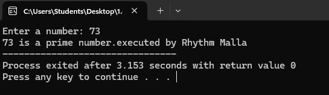
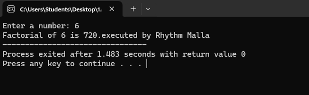
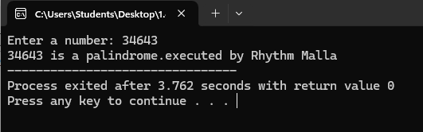
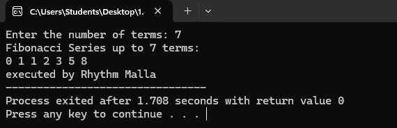
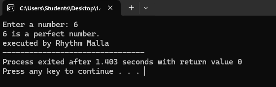

Chapter 1: Computer system
Introduction
Computer is an electronic device device derived from the Latin word "computere" which means to calculate. It accepts raw facts and figures as an input which are isolated and uninterpreted through input device, process it according to the requirement of the user or command supplied by the user, store it before and after processing of require and produce a meaningful information as an output through an output device. Generally, computer works on IPO (Input-Process-Output) cycle. It follows GIGO (Garbage In Garbage Out) algorithm which means the output is always based on the input supplied by the user. The basic operation of computer is illustrated by following block diagram.

Some characteristics/features of computer.
The implementation of computers are not only limited/confined to a small area rather they are used from simple domestic task to complex scientific research to engineering. The use of computer are increasing day-by-day due to some special features or characteristics that computer own. Several features of computer are:
- Accuracy: Computer are the accurate machine that means result produced by computer are 100% accurate. Since, it follows GIGO. The error that may arise in output is due to human not by a computer.
- Speed: Computer works on tremendously high speed. The operating speed of computer are measured in millisecond, microsecond, picosecond and nanosecond which means computer can perform millions and billions of instruction per second.
- Storage: It is the area or unit which is capable of storing data and information for present and future use. Storing data allows users to retrieve it whenever required. These days computer comes with high volume of memory which are measured in Megabyte (1024 KB) , Gigabyte (1024 MB), Terabyte(1024 GB) and Petabyte(1024 TB).
- Versatility: Computer are generally design to serve more than one type of work. The implementation of computer are not only limited to specific purpose, they solve general requirement of the user and can be used in more than 1 type of job.
- Diligence: The feature of computer in which computer doesn't get tired even after working for long period of time. Computer can perform any number of task continuously until it is accomplished. Once the instruction is given computer follows the command till it gets terminated.
- Automatic: Computer is an automatic machine. Once the instruction is generated it perform accordingly until command is terminated. We don't have to issue continuous command in order to operate the computer. This is called automatic.
Applications/Implementations/Uses of computer
The uses of computer are increased day by day. Every aspect if human life is highly influenced by computer. From simple domestic use to complex engineering and scientific solutions, computer can be used. This is due to the versatility of computer. Some of the basic implementation of computer are:
- Education: Nowadays, computer are highly used in teaching and learning process. Many interesting graphics can be made and provided for easy learning. Also, computer provide features of internet which make learning easy and fun.
- Communication: Computer is massively used in communication. Communication is done by e-mail, chat, online conferencing. e-fax etc with help of internet in computer. It has made the communication faster, easier and cheaper.
- Business: In business sector, computer are used to generate invoice, maintain stock and make statistical analysis. E-commerce is the new and emerging way of buying and selling goods and service through used of electronic means and media.
- Engineering and designing: Scientific and engineering design requires complex and massive computations. Design of bridges, towers, buildings, generators, motors, electrical transmission etc requires precise computation which are done through computers.
- Science and research
- Military
- Industry
- Medicine
- Robotics
- Transportation
Capabilities and Limitations of computer (Pros and Cons)
Capabilities/Advantages/Merits/Pros of computer:
- Computer is capable of handling larger volume of data and can store huge amount of data.
- Computer can perform millions of instruction within a limited time frame with same speed and accuracy.
- Computer are used to fulfill the general requirement of user.
- It provides faster and cheaper way for communication.
- Computer are used to solve complex and critical situation in which involvement of humans are almost impossible.
Limitations/Disadvantages/De-merits/Drawback/Cons of computer:
- Computer is a dull machine, it cannot make their decision on their own.
- Computer requires electricity or battery in order to operate.
- It can affect human eye, when used for long period of time.
- It requires several peripheral devices and software to run.
- It cannot think, learn or react as human.
- It cannot draw conclusion and provide feedback.
Generations of computer.
History of computers dates back to mechanical era where computer were not used for general purpose. It takes long period of time to come to this phase. Development of computer had passed through different era from mechanical to electro mechanical to digital computer. The development in different electronic components, precise engineering and hi-tech technology has change the operation of computer drastically. Earlier computer were only used for specific purpose such as counting and performing basic mathematical operation. Later on, due to the necessity and requirement of user different general purpose computer were developed. Therefore, the classification of computer on the basis of major electronic component, their architecture and modes of operation is known as generations of computer. Five different generations of computer are listed below along with their distinct features.
1. First generations computer (1946-1958 )
- They used vacuum tubes as their basic electronic components used to control and amplify electronic signals.
- They were big in size, consume more electricity and generate large amount of heat thus required air conditioning system to keep device cool.
- They were unreliable and were prone to frequent hardware failure.
- They were normally not used for commercial purpose.
- Machine level language was used to program these computers.
eg: ENIAC, EDVAC, EDSAC, UNIVAC
2. Second generations computer (1959-1964 )
- They used transistors as their basic electronic components.
- They were small in size as compared to first generation thus consume less electricity and generate less heat.
- They were less prone to hardware failure thus more reliable.
- They were not also for commercial purpose because production was difficult and costly.
- Assembly language were used to program these computers.
eg: IBM 7000, IBM 1401, IBM 1620, NCR 304, MARK III, ATLAS
[Note: First computer brought in Nepal was IBM 1401 for population census of 2028 BS]
3.Third generations computer ( 1965-1974 )
- They used Integrated Circuits (IC) as their basic electronic components.
- They were smaller in size, consume less electricity and generate less amount of heat.
- They were faster and more reliable compared to first and second generations.
- They were widely used for the commercial application all over the world.
- High level language were used to program these computers.
eg: PDP-8, PDP-11, ICL 2900 series, IBM 360, IBM 370
4. Fourth generation computer (1975-1990)
- They use VLSI ( Very Large Scale Integrated Circuits ) as their main electronic components.
- There size were drastically reduced and hence were they were much more portable.
- They were faster in processing and were much more reliable.
- They have larger memory up to GB and TB.
- They use different advance high level language to program this computer.
eg: Apple Macintosh, IBM PC
5. Fifth generation computer (1990-onwards)
- They use ULSIC (Ultra Large Scale Integrated Circuit) or Microprocessor as their major electronic components.
- They have or will have artificial intelligence.
- They have tremendously high processing unit due to parallel processing.
- They are capable of image processing, speech or voice recognition.
- They use different high level language to program this computer.
Introduction to computer system
The word system refers to the integration of several individual independent unit which are integrated together to achieve a common objective or goal. System is a set of detailed method, procedure and routines created to carryout a specific activity, performs a duty or solve a problem. In a system different unit co-ordinate with each other so that they work as a whole. Without any of the unit whole system is affected.
Similarly. computer system is also a Combination on hardware, software and peripherals which are organized together to run our computer system smoothly. Basically, our computer System works on IPO (Input Process Output) cycle. So, it is mandatory/compulsory to have different unit work together as a whole in order to convert raw facts and figure into meaningful information. Without any one of these unit computer starts malfunctioning.
The design, arrangement, construction or organization a different parts of computer system is known as computer architecture. It is the conceptual design and fundamental operational structure of a computer system. It is a framework which focus in how CPU performs internal operation. So computer architecture may also be define as the science and art of selection, inter connecting hardware components to create computer to meet functional performance and cost.
Components/Elements of Computer System
A Computer System has several have several basic components or elements which are listed below:
1. Hardware ( Input, Output, Processing and storage )
2. Software
3. Data/Information
4. Procedure
5. People
6. Communication
Hardware: Hardware is the physical devices on the computer which we can touch and see With out hardware, software cannot work it include input device, output device, processing device and storage device for example: device like keyboard, mouse, CPU, hard disk and RAM are commonly used hardware devices.
Software: The collection set of instruction is known as program.which performs some specific function. These programs are integrated together in order to work as a software. Software describes how hardware should function and helps in popper utilization and mobilization of computer hardware.For eg. Operating system, MS-Office, Billing software etc.
Data/Information: The raw facts and figures that are isolated, uninterpreted, and doesn't give any sense is known as data. Data are fed into the computer for processing as a input though Input devices. Whereas, the meaningful result obtained after processing data according to the supplied instruction is known as information. Information generally are the processed version of data which are obtain as output through output device.
People/User: It is the most important part of the computer system. People operate the computer hardware and create the computer software. People helps to generate command to operate the computer system. Without user no hardware and software can be mobilized.
Procedure: Procedure are the description of how things are done.It includes steps for converting raw fact and figure into meaningful information. It include the general guidelines of how computer should be used.
Communication: Once the computer system is setup, there is tremendous amount of data flow between user to computer and vice-versa. The data are shared among different components of our computer System in the form of electronic signal. The exchange of data and information between several components can also be termed as communication.
Basic hardware components of a computer system.
1. Input unit
2. Output unit
3. Processing unit
4. Storage unit
Input Unit: Data and instruction must enter the computer system before any computation can be perform on the supply data. Input device accepts data and instruction from the user, hence the device or the unit which is used to fed raw facts and figures to the computer system for processing along with set of instruction is called input unit.
It also converts input data into suitable form that is accepted by the computer System. Generally, it act as a interface/bridge or medium through which communication between user and computer takes place. In short following are the functions performed by the input unit
1. It accepts the list of instruction and data from the outside world.
2. It converts the supplied instruction and data into computer acceptable form that is binary code.
3. It supplies the converted instruction and data to the computer system for further processing.
Some of the commonly used input device are:
Keyboard , track pad, touchscreen, mouse, light pen, scanner, BCR, MICR, OCR, joystick ,trackball etc
Output Unit: The job of an output unit is just the reverse of an input unit. It supplies information and result of computation to the outside world. Thus, it links computer with the external environment. It consists of device that translate information processed by the computer into a form that human can understand. The computer processed information consist of Os and 1 which need to be translated into letters, numbers, special symbols, pictures etc that people can understand. In short following are the function performed by an output unit:
1. It accepts the result produce by the computer which is not understandable to us.
2. It converts the result into human understandable form.
3. It supplies the converted results to the outside world.
Commonly used output device are:
Monitor, printers, speakers, plotters etc.
There are two types of output device.
i. Hard Copy output
ii. Soft Copy output
Hard copy output: These type of output are in print form on the paper or some material that can be touched and carried for being shown to other. It is permanent in nature. So that we can look after these output even there is no computer. Unlike soft copy output, these type of output does not need continuous supply of power. for example, Output produce in paper or other material by printer or plotter is known as hard copy output and the device is known as hard copy output device. The commonly used hard copy output devices are printer and plotter.
Soft copy output: Soft copy output refers to the data shown on display screen or produced by speaker. These type output is untouchable. It is temporary in nature that means, output cannot be carried for being shown to others. These types of output resides only when there is computer or continuous electric supply. It is non-portable compared to hard copy output. for example, Output produced on display screen or sound produced from speaker are soft copy output and whereas the device is known as soft copy output device. The commonly used soft copy output devices are speaker and monitor.
Q. Differences between impact and non-impact printers?
(Important question of NEB 11 board exam)
| Impact printer | Non-Impact Printer |
| 1. It uses electro-mechanical mechanism that causes hammers or pins to strike against a ribbon and paper to print the text | 1. It uses thermal, chemical, electrostatic, laser beam or ink jet technology for printing the text and images. |
| 2. It is slow while printing. | 2. It is fast while printing. |
| 3. It uses force for printing and produces more sound while printing. | 3. Since it doesn't use force for printing it produces less sound while printing. |
| 4. It cannot print graphics perfectly. | 4. It can print graphics perfectly. |
| 5. It is usually single colored. | 5. It can be single or multi-colored. |
| 6. It is rarely used at present. | 6. It is widely used at present. |
| examples: Dot matrix printer, Typewriter etc. | Examples: Ink jet printer, laser printer etc |
Central Processing Unit: The CPU is brain of any computer system. Like in human body, all major decision are taken by the brain Similarly, in computer all major calculation and comparison are made inside the CPU and CPU is also responsible for activating and controlling the operation of other unit of a computer system A micro processor is a single chip that performs the function of CPU in micro-computers. The speed of the microprocessor is measured in terms of Megahertz and Gigahertz. The functions of CPU (processor) are:
out processing command and co-ordinate with all other parts of computer System:
i. To carry out processing.
ii. To give command and co-ordinate with all other parts of computer system.
iii. To control the sequence of operation that takes place in our computer system.
iv. To helps in memory allocation and controls storage of data and instruction.
The central processing unit consists of unit.
1. Arithmetic logic Unit (ALU)
2. Control Unit (CU)
3. Memory Unit (MU)
ALU: ALU stands for Arithmetic Logic Unit. It is one of the most important unit of processing. Where actual execution of the instruction takes place during processing. It performs arithmetic and logical operations and controls speed of those operations as directed by control unit(CU). To be clear all the calculation and decision are made in ALU. The data and instruction are stored in the primary memory before processing, and are transferred when needed to the ALU. ALU is designed to perform fundamental mathematical operations such addition, subtraction, multiplication, division and logical Operation which perform Comparison between the two or more than two operands to make a solid decision also known as logical operation which consists of logical OR, logical AND and logical NOT.
CU: Although, control unit doesn't perform any actual processing on the data , it acts as a central nervous system for other component of the computer. It manages and co-ordinate the entire computer system. It obtain instruction from the program stored in the main memory, interprets the instruction accordingly and issue signal that cause other unit of the system to execute them. Basically, it controls overall operation of the computer. It also controls all other device input/output device connected to the CPU. It directs the movement of electrical signal between main memory to ALU and input-output device. Hence, control unit acts as the nerve system of the computer system.
MU: Memory unit is responsible for storing data and instruction either for short or longer period of time. Basically memory unit stores data and instruction before and after processing . As we know, memory are needed for program being currently used or to store data and instruction permanently . Depending upon the nature of data stored memory unit are distinguished into primary memory and secondary memory. Memory unit of CPU is a primary memory where data and instruction are stored temporarily. Where as the processed data and information can be stored in secondary memory permanently so that user can retrieve information whenever required. There are two types of memory used in our computer system.
1. Primary memory/Main memory
2. Secondary memory/Auxiliary Memory
1) Primary Memory/Main Memory:
Primary Memory is also known as main memory of computer. This is the place where our data and instruction are stored before processing and the result are stored before displaying output. Memory which stores data and information currently being used by the computer is known as primary memory.
Features of primary memory:
1. It is not used to store data permanently.
2. It is usually volatile except ROM.
3. It is usually expensive and faster than Secondary storage.
4. It is normally used for smaller storage.
5. It is not used to transfer data from one computer to another computer.
6. It is made up of semiconducting material.
There are two type of Primary memory.
1.1) RAM: RAM stands for Random Access Memory, which stores data and instruction temporarily. It is also known as volatile memory that means data and instruction written in RAM gets erased away when electric power is c.ut off. A user can read as read from it and write in it. Hence, it is also known read-write memory. There are two types of RAM.
SRAM: It stands for Static Random Access Memory. It is made up of transistors. It is called static because it can remember its memory content without being refreshed or as long as there is power. SRAM doesn't need periodic refreshment like DRAM. It is faster than DRAM but more consume more electricity.
DRAM: It stand for Dynamic Random Access Memory. It is made up of capacitors. It is called dynamic because it needs periodic refreshment and can remember its memory content only after being refreshed as long as there is electric charge in a capacitor. It consume less electricity and is less expensive but is slower than SRAM.
1.2) ROM: ROM stands Read Only Memory where data and information are stored permanently. It is also known as non-volatile memory as data and instruction remain even after there is no power supply. Data are stored in ROM during manufacturing time. The program present in ROM is called firmware and is responsible to boot the computer. The types of ROM are:
PROM: It stands Programmable Read Only Memory. Initially, it is a blank chip which can be written or program only once by using a special machine called ROM burner. Once the PROM is written it cannot be modified and becomes ROM.
EPROM: It stands Erasable Programmable Read Only Memory. It is a special chip which can be reprogrammed to recond different information. The data and information are erased by exposing it to the intensive ultra violet light.
EEPROM: It stands for Electrically Erasable Programmable Read Only Memory. This type of chip can be erased and reprogrammed repeatedly with special electric pulses. It doesn't require special device to write onto it. EEPROM can be re-programmed without removing it from the computer.
2) Secondary Memory/Auxiliary Memory:
Memory which stores data and information permanently for future reference is known as secondary memory. It is a permanent memory where data and instruction remains forever. It is also known as non-volatile memory in which data and instruction remains even if there is no electric supply. This type of memory is also known as auxiliary memory. It has a huge storage capacity up to Gigabytes, Terabytes or even more. Different secondary storage media used are: Magnetic storage, Optical storage and Flash storage.
2.1) Magnetic Storage: It is a storage media in which data are stored in the form of magnetic spot. A coating of magnetic metal oxide like ferric oxide is done over the disk which attracts the data to be deposited over them. Data are stored in the form of magnetic pattern. Some of the magnetic storage media are: Magnetic tape, Floppy disk and so on.
Hard disk: It is secondary storage device of Computer. It is an air-tight sealed consisting of number of magnetic disk (Platters) mounted on a spindle. It was introduced by IBM in 1956 AD. It was first called Winchester disk.Unlike floppy disk it cannot be bend so it is known as hard disk. It is mainly used to store huge volume of data and programs permanently so it is known as non-volatile memory. The disk is divided into the number of concentric circle called tracks and this tracks is divided into invisible segments called sector.
Floppy disk: It is a round and flat disk made up of Mylar (Plastic material) coated with magnetic material. It is read-write memory as we can read from it as well as write onto it. We can access information from a floppy disk randomly randomly. It has very small storage compare to hard disk.
2.2) Optical Storage: is also non-volatile secondary storage media. It is a flat round disk made up of plastic poly carbonate material coated with aluminium alloy. A very fine laser beam is projected to read and write data from and onto the disk. Some commonly used optical storage is CD-ROM, DVD and Blu-Ray (BD). The different types of optical storage are:
CD-ROM: It stands for Compact Disk- Read Only Memory. It is a optical storage media as it use laser beam to access data from the disk. It can store up to 700mb of data and are useful to store large amount data like computer software, audio, video movies etc. Other types of CD-ROM are CD-R and CD-RW.
DVD: DVD stands for digital Digital Versatile Disk or Digital Video Disk. It is also a type of optical memory which can store very large amount of data and information almost six times more than CD. It is also considered as improved form of CD-ROM and use same technology as that of CD-ROM for reading and writing data.
2.3) Flash Memory: It is a non-volatile. erasable and programmable solid state memory which is made up of Semi- Conductor chip. It was first introduced in mid 1980's by Fujio Masuaka in Toshiba Corporation of Japan It can be re-programmed at high speed and hence the name flash. It is derived from EEPROM. In Flash entire memory can be eased in a few second by using electric technolgy. Examples memory card, pen-drive etc.
Classification of computer on the Basis of Size
As we know, technological development and precise engineering had drastically reduce the size of computers. Development of various electronic components are the major cause for reducing the size of the computer. Different types of computer on the basis of size are:
Super Computer: This computer are one of the fastest and powerful digital computer which can perform only a particular types of jobs such as weather forecasting, rocket launching, population counting etc. They were tremendously huge in size and are very expensive. Due to this reason they are not commercially successful. They are used by large corporations and government agencies. They were large in size hence, it occupy much more space and require temperature controlled room.
Mainframe Computer: This computer are also largest, fastest and perhaps one of the most expensive computer. Super computer are much more powerful and expensive but they are similar in size with mainframe computers. These computers have high processing unit and large storage capacity. This computer have multiple terminal. This computer can do big capacity of processing tasks such as population census, agro census, SLC result processing, governmental offices, industries etc. The first computer bought in Nepal in 2028 BS was IBM 1401, which was also a mainframe computer. This computer was bought in Nepal for population counting. Moreover, second computer bought in Nepal was ICL 2950/10 in 2038 BS which was also a mainframe computer brought for same purpose.
Mini Computer:This computer are smaller than mainframe computer and are more powerful and expensive compare with micro-computer. They use terminal and are connected with more than 50 terminal at a time. Hence, it can handle much more amount of input and output than micro computer. The capability of mini computer is somewhere in between mainframe and micro computer. So, they are often called mid-range computer. This computer are used for medium size business, industries, universities, banks due to easy operation than mainframe computer. Eg, Data general, NECK, MAGNUM
Micro Computer: These are the smallest computer develop till date they use micro-processor as their major processing unit. Hence, they are called micro-computers. This computer are small and low cost digital computer. They are also called home computer or personal computer. This days we can find various micro computer that has various processing speed, storage, capacity and size according to cost. They are normally used in office, home, school, shop etc. Micro Computer are also found in various shape and size. They are desktop, Laptop and palmtop.
a. Desktop: They are the personal computer which use micro-processor as a single chip processing unit normally called CPU whose size are so small that they accommodate in a desk of a user. Desktop also have various range of personal computer having several processing speed, storage, capacity and other features. This computer are out popular computer this days. So that, they are used in various commercial field such as school, home, office, business and so on.
b. Laptop: This computer are highly portable micro computers and can be carried from one place to another easily like briefcase. They are so small that they can be fixed in a lap of a user and hence they are called laptop. They are mostly popular among traveller and the business man. We have to move from one place to another place for work and different reasons. Since, laptop comes with battery backup, we don’t need to have direct A.C. supply. So, we can use without direct connection of electricity. It high reliability, portability and flexibility.
c. Palmtop/Handheld: These are the most portable and smallest device that are develop till date. They are so highly portable that they can be carried easily inside the pocket of the user. Due to small in size they can be adjusted within the palm of the user. So, they are called Palmtop. Several tablets, PDA (Personal Digital Assistant), smartphones are commonly used palmtop these days. This device also gave huge range of application ranging from game playing, internet surfing, and other official needs and requirement. This device also comes with battery backup.
Chapter 2: Number System, Conversion and Boolean Logic
1's and 2's Complement
1's Complement: Reciprocal of 1s to 0s and 0s to 1s is its 1's complement. For eg, 1's Complement of (1011)2 is (0100)2
2's Complement: Adding 1 to the 1's complement of a given binary number is its 2's complement.
For eg, if (1010)2 is a given number then, its
1's complement is (0101)2 and 2's complement is (0101)2 +(1)2 = (0110)2
Very important
Subtraction using 1's and 2's Complement
Rules to remember [ let us consider, question be X-Y] | |
| Using 1's Complement | Using 2's Complement |
| Calculate 1's complement of ‘Y’ | Calculate 2's complement of ‘Y’ |
| Add result of step 1 with ‘X’ | Add result of step 1 with ‘X’ |
| If there is extra bit, remove that extra bit and add on its remaining bit. | If there is extra bit, remove that extra bit. |
| If there is no extra bit, find 1's Complement of result in step 2 and add (-)ve sign. | If there is no extra bit, find 2's Complement of result in step 2 and add (-)ve sign. |
Example ( Sure question for Board exam)
Q) Subtract (1000)2 from (111)2 using 1's and 2's complement.
Ans. Given question is (111)2 - (1000)2
A) Using 1's Complement,
First calculating 1's complement of (1000)2 is (0111)2
Adding (0111)2 with (111)2 we get
(0111)2 + (0111)2 = (1110)2
Since, there is no extra bit i.e. 4 digits added with 4 digits and gives 4 digits result
Calculating 1's complement of (1110)2 we get (0001)2 and putting (-)ve sign
Hence, result is -(0001)2
B) Using 2's Complement,
First calculating 2's complement of (1000)2 is (0111)2 + (1)2 = (1000)2
Adding (1000)2 with (111)2 we get
(1000)2 + (0111)2 = (1111)2
Since, there is no extra bit i.e. 4 digits added with 4 digits and gives 4 digits result
Calculating 2's complement of (1111)2 we get (0000)2 + (1)2 = (0001)2 and putting (-)ve sign
Hence, result is -(0001)2
Q) Subtract (11001)2 from (11101)2 using 1's and 2's complement.
Ans. Given question is (11101)2 - (11001)2
A) Using 1's Complement,
First calculating 1's complement of (11001)2 is (00110)2
Adding (00110)2 with (11101)2 we get
(00110)2 + (11101)2 = (100011)2
Since, there is extra bit i.e. 5 digits added with 5 digits and gives 6 digits result
Removing that extra bit and adding on it
(00011)2 + (1)2 = (00100)2
Hence, result is (00100)2
B) Using 2's Complement,
First calculating 2's complement of (11001)2 is (00110)2 + (1)2 = (00111)2
Adding (00111)2 with (11101)2 we get
(00111)2 + (11101)2 = (100100)2
Since, there is extra bit i.e. 5 digits added with 5 digits and gives 6 digits result
Removing that extra bit, we get (00100)2
Hence, result is (00100)2
Click here for more solved examples.
Introduction: Boolean Logic
Boolean Algebra is algebra of logic, which deals with the study of binary variables and logical operation. As every data are represented in terms binary values, we need to manipulate those values by using some certain rules and expression which we can do through Boolean algebra. It is most common and basic method to analysis and design logic circuit. It was introduced by an English mathematician George Boole. In Boolean algebra the variables can have only one of the two possible value 0 and1 (False or True). Every modern digital computers understand either this two values.
Boolean algebra: It is algebra of logic which could accept either of the possible two values 0 and 1 and generate a result through logical relationship and operation.
Boolean variable: Those entities which has either or 0 and 1 and denote some specific operation ore known as boolean variable. Simply, it is an entity in Boolean algebra which has only either of the two possible values. This variable are denoted by A, B, P, Q, X, Y, Z….
Boolean function (logic functions): Boolean function is an expression formed by binary variables, binary operators such as AND, OR, NOT, parentheses, and equal sign for a given set of value this boolean function gives the 0 or 1 as a result.
let us consider,
F = XYZ’+XY
Where, F is a boolean function
X, Y, Z are a boolean variable.
X, Y, Z, Z’ are also literals.
Truth Table: A table which represents the input-output relationship between of the binary variables for each logical gate called truth table. It shows the relationship between input and output in tabular form. Thus, truth table is table representing the results the logical operation of the logical operation on all possible combination of logical values.
Boolean Operator and Operands
Operators are the symbols that define the specific operation. These are three basic operators used in Boolean Algebra, ie. AND, OR, NOT. Every other operations can be expressed in terms of this basic operation. For examples, NOR operator is the combination of NOT and OR operators. The three basic operators are:
a. AND Operators: AND operator is represented by “.” So, A AND B is represented by (A.B) . The result of the AND operation is exactly same as simple arithmetic multiplication. That means result will be high (1) only when both the inputs are high. Note: A AND B can also represented bu AˆB or AnB. Truth table of AND operation is given below
| A | B | Y = A.B |
| 0 | 0 | 0 |
| 0 | 1 | 0 |
| 1 | 0 | 0 |
| 1 | 1 | 1 |
b. OR Operator: OR operator is represented by “+” So, A OR B is represented by (A+B) . The result of the OR operation is exactly same as simple arithmetic addition. That means result will be low (0) if and only both the inputs are low. Note: A OR B can also represented bu AvB or AuB. Truth table of AND operation is given below
| A | B | Y = A+B |
| 0 | 0 | 0 |
| 0 | 1 | 1 |
| 1 | 0 | 1 |
| 1 | 1 | 1 |
c. NOT Operator: NOT operator is represented by “-” or “ ’ ” So, NOT operation of an operands A is represented as A’ . NOT operation performs negation. That means it will give high output (1) for low input (0) and vice-versa. Truth table of NOT operation is given below
| A | A' |
| 0 | 1 |
| 1 | 0 |
Logic Gate
A logic Gate is an electronic circuit that operates on one or more inputs to produce an output. Logic Gate are used for binary operations which are very fundamental components for modern digital computer. Logic gates are embedded unit an Integrated Circuit (IC). Each gate has its specific function and graphical symbol. In digital computer there are three basic logic gates. Click here for gate symbol and Venn diagram.
a. AND gate: AND Gate is an electronic Circuit which produce high output (1) only when both the inputs are high. The output is same as the result of basic arithmetic multiplication. This gate may have more than two inputs and produce a single output. Graphically AND gate is represented as
AND gate is denoted by “ . ” So, output is expressed algebraically as, Y = A
Truth table for AND gate is
| A | B | Y = A.B |
| 0 | 0 | 0 |
| 0 | 1 | 0 |
| 1 | 0 | 0 |
| 1 | 1 | 1 |
b. OR Gate: OR Gate is an electronic circuit which produce low output (0), when all the inputs are low (0) and produce high (1) output for every possible combination of 0 and 1. The output is same as basic binary addition. The gate may have two or more than two inputs and produce single result.
Graphically OR gate is represented as
Algebraically output of OR Gate is represented as: Y = A+B
Truth table of OR Gate is
| A | B | Y = A+B |
| 0 | 0 | 0 |
| 0 | 1 | 1 |
| 1 | 0 | 1 |
| 1 | 1 | 1 |
c. NOT Gate: NOT Gate is another fundamental gate whose result is complement of its input. It is also called inverter. It produces low-0 logic for high-1 input and vice-versa. This Gate has single input and single output. Graphically NOT gate is represented as:
Algebraically output of NOT Gate is represented as: Y = A’ for input A
Truth table of NOT gate is:
| A | A' |
| 0 | 1 |
| 1 | 0 |
d. NAND Gate: NAND gate is a derived gate, derived from NOT and AND gate. This gate reciprocal the output obtain from the AND gate. That means it will produce low-0 output when both the inputs are high-1 and produce high-1 output when any one of the input is low-0. These gate also may have two or more than two and a single output.
Graphically NAND gate is represented as:
Algebraically output of NAND Gate is represented as: Y = (A.B)’
Truth table of NAND Gate is:
| A | B | A.B | y=(A.B)' |
| 0 | 0 | 0 | 1 |
| 0 | 1 | 0 | 1 |
| 1 | 0 | 0 | 1 |
| 1 | 1 | 1 | 0 |
e. NOR gate: NOR gate is a derived gate derived from the combination of OR gate and NOT gate. This gate reciprocal the output obtain from the OR gate. That means NOR gate will produce high-1 logic when both the inputs are low-0 and produce low output-0 in all possible combination of 0 and 1. These gate also may have two or more than two input at a single output.
Graphically NOR gate is represented as
Algebraically output of NOR gate is represented as: Y: (A+B)’
Truth Table of NOR gate is
| A | B | A+B | Y = (A+B)' |
| 0 | 0 | 0 | 1 |
| 0 | 1 | 1 | 0 |
| 1 | 0 | 1 | 0 |
| 1 | 1 | 1 | 0 |
f. Exclusive OR (X-OR): It is the type of digital electronic circuit will generates low-0 output when both the inputs are either low-0 or high-1. It will give high-1 output only when one of the given input is high. These gate also may have two or more the two input.
Graphically X-OR gate is represented as
Algebraically output of X-OR gate is represented as: Y: A’.B + A.B’
Truth Table of X-OR gate is
| A | B | A' | B' | A'.B | A.B' | A'.B+A.B' |
| 0 | 0 | 1 | 1 | 0 | 0 | 0 |
| 0 | 1 | 1 | 0 | 1 | 0 | 1 |
| 1 | 0 | 0 | 1 | 0 | 1 | 1 |
| 1 | 1 | 0 | 0 | 0 | 0 | 0 |
g. Exclusive NOR (X-NOR): It is the type of digital electronic circuit will generates high-1 output when both the inputs are either low-0 or high-1. It will give low-0 output only when one of the given input is high-1. These gate also may have two or more the two input.
Graphically X-NOR gate is represented as
Algebraically output of X-NOR gate is represented as: Y: A.B + A’.B’
Truth Table of X-NOR gate is
| A | B | A' | B' | A.B | A'.B' | A.B+A'.B' |
| 0 | 0 | 1 | 1 | 0 | 1 | 1 |
| 0 | 1 | 1 | 0 | 0 | 0 | 0 |
| 1 | 0 | 0 | 1 | 0 | 0 | 0 |
| 1 | 1 | 0 | 0 | 1 | 0 | 1 |
De-Morgan's Theorem
First Theorem: The De-Morgan's first theorem states that, “The complement of a sum equals to the product of its complement.”
It is represented as: (A+B)' = A'.B''
Graphical symbol
Proof:
| A | B | (A+B) | (A+B)' | A' | B' | A'.B' |
| 0 | 0 | 0 | 1 | 1 | 1 | 1 |
| 0 | 1 | 1 | 0 | 1 | 0 | 0 |
| 1 | 0 | 1 | 0 | 0 | 1 | 0 |
| 1 | 1 | 1 | 0 | 0 | 0 | 0 |
Second Theorem: The De-Morgan's second theorem states that, “The complement of a product equals to the sum of its complement.”
It is represented as: (A.B)' = A'+B''
Graphical symbol
Proof:
| A | B | (A.B) | (A.B)' | A' | B' | A'+B' |
| 0 | 0 | 0 | 1 | 1 | 1 | 1 |
| 0 | 1 | 0 | 1 | 1 | 0 | 1 |
| 1 | 0 | 0 | 1 | 0 | 1 | 1 |
| 1 | 1 | 1 | 0 | 0 | 0 | 0 |
Chapter 3: Computer software and Operating System
Software - Introduction:
As we know stand alone hardware cannot do nothing, for the smooth operation of our Computer System there should be proper coordination between hardware and software. Software helps to mobilize the hardware and other resources. In order to mobilize hardware we have to write several set of instruction which instruct computer what to do, what not o. These set of instruction are collectively know as program and the term software is the collection of related programs and associated documents. In Order to produce useful output, hardware and software must work together. Nothing useful can be done with the hardware only and software cannot be utilize without hardware. The different types of software are:

1) System software:System software is set of one or more programs designed to control the operation of our computer system. This type of software doesn't fulfill the specific requirement of the user. They are general program written to assist human in the use of the computer system. In general system software support the running of other software, communicate with peripheral device, support the development of other types of software and monitors the use of various hardware resources. Thus, the system software makes the operation of the computer system more effective and efficient. The system software is categorized into two categories.
1.1) System Management: It is responsible for proper management and functioning of the computers system. All types of management between computer hardware and software is performed by system management software. There are 3 types of system management software:
1.1.1) Operating System: Operating system is a collection program that controls the overall operation of the computer system. It is the 1st program that is loaded into memory when the computer is turned on. It provides platform for other application program to run and execute. It provides user with an interface so that uses can easily communicate with computer. For example Linux, Windows, Mac etc
1.1.2) Utility software: It is the supporting software which is used to perform specific task related to the maintenance of the computer system. Some of the utility software are included in operating system where as some are available as separate utility in market. They are also called service program. For example Norton Utility, PC tools, win zip etc
1.1.3) Device driver: A device driver is a software which is responsible for smooth functioning of the hardware device that is connected to the computer. When we add a new device to the computer, we need to install new software called device driver. Device driver will co-ordinate with the operating system and the newly installed hardware functions properly and smoothly.
1.2) System Development: It refers to set of programs that are use to develop computer program. This type of software are not used by a normal user of the computes. They are used by programmers for the development of new program. There are two types of system development software:
1.2.1) Programming language: The language with which we give instruction to the computer is known as programming language. Programming language are the set of different keywords, variable, operators, loops and other symbols etc. They help to make communication between computer and user. These are two types of programming language low level language and high level language.
1.2.2) Language translator: It is a special kind computer software which translates the programs written one language in another language. It is compulsory for both low and high level language. It is also called language processor. The types of language translator are compiler, interpreter and assembler.
2) Application Software: Application software is a set of one or more program which are design to do a specific task. It is made to fulfill the user demand. This program directs a computer to solve user oriented problem such as preparing bills, calculating mathematical equation, preparing mark sheet etc. The software that are develop for user purpose is called application software.These types of software are generally develop by using high level language. for example Ms-Excel, Photoshop, Billing software etc. There are two types of application software.
2.1) Packaged software: They are the generalized set of programs design and develop for general purpose. It is generally large sized, error-free, advance and standard software with much more functionality fir especial work. This type of software doesn't perfectly match the requirement of many organization or user. They cannot be changed easily are developed and designed by reputed software Company so they are trust worthy. They are expensive for small organization. for example Ms-Office, Adobe, Macromedia etc.
2.2) Customized /Tailored software: This is a software develop in high level language for special task. This types of software is developed for some specific purpose for solving specific problem of specific user or organization. The requirement on the user or organization can be perfectly matched. They can be changed easily since they are made by local programmer. for example: payroll system, inventory management, school management, billing software, mark sheet evaluation etc.
Operating system - Introduction
An operating system (OS) is an integrated set of program that controls overall resources such as CPU, memory, input-output device of the computer system. The major objective of operating system is to improve the performance and efficiency of a computer system. Like the manager of a company, an operating system is responsible for the smooth and efficient functioning of the entire computer system. The operating system provides the platform for other application program/software to run and execute. It provides user with an interface so that user can easily communicate with computers, which is more convenient to use and operate.
An operating system is a collection of program that controls the overall operation of the computer system. It also controls and co-ordinate the use of hardware, among the various application program for various user. So, it act as an interface between user and the computer hardware. The other major functions of operating system are:
- It controls, monitor and co-ordinate overall operation of our computer system.
- It act as an interface between user and computer.
- It provide platform to develop, run and execute other computer program.
- It manages hardware resources such as CPU, memories, input-output terminals, networking equipment etc.
- It hides programming and hardware complexity to the user.
The primary goal of an operating system is to maximize the productivity of a computer system by operating it in most efficient manner and maintaining the amount of human intervention. Some example of operating system are: MS-DOS, Windows, LINUX, MACOS, UNIX, Chrome, Fedora, Ubuntu etc.
Functions / Features / Advantages of Operating System (OS) - V.imp
1) Input-Output (I/O) Management: Input-Output is essential to operate any computer. It allows computer to interact with several peripheral devices such as keyboard, mouse, printer, scanner etc.
2) User Interface (UI): User Interface means an ideal environment in which user can work on it so that s/he can interact with the computerized system. Every operating system provides the feature of user interface in order to enhance the experience and joy of using computer or any other computerized system. It act as a bridge between user and computer. There are 2 types of user Interface.
- Character/Command User Interface ( CUI ): Eg MS-DOS
- Graphical User Interface (GUI ): Eg Windows, MAC OS
3) Security: The operating system of a computer has a number of built-in tools to protect against security threats such as viruses, unauthorized access, suspicious network activity etc. The basic security in a OS is to control access to your computer by setting users and password.
4) Process Management: The process management allocates a processor to execute a chosen process. OS acts as a traffic controller, job scheduler, process scheduler and dispatcher.
5) Memory Management: Memory is a large array of bytes, each with its own address. When the user request CPU for read-write operation. OS determines the amount of memory required for the program instruction and data. Then OS allocates required memory to load the program and data into RAM. When the program terminates it freeze up the space and new program is loaded.
6) Data Management: Data management allows organizing their data into logical grouping called files.Earlier Operating system does not provide features of data management. Hence, they were inflexible but nowadays, every operating system provide this feature.
7) Command Interpreter: The command interpreter reads the command that a user types in at a terminal, interprets them and translate them into detail set of instruction that computer hardware can understand. Every operating system must have command interpreter for its operation.
8) Dead-Lock prevention: During processing a situation can arise in which a resources shared by two or more process cannot continue because the resources required by a process is held by other. This situation is known as dead lock. For eg. If process-1 allocates resources A and later required resources B and process-2 allocates resources B and later requires resources A. In this situation neither process-1 nor process-2 will be executed. Such situation is called deadlock. Operating system ensure prevention of deadlock by taking situation action by careful allocation of resources.
9) Time sharing: The function of OS that involves CPU to allocate time in a number of user on same computer. This property generally found in network operating system such as windows NT.
10) Virtual Memory: Virtual memory is the feature of an operating system that allows a computer to compensate for shortage of physical memory by transferring temporary files from RAM to disk. Virtual memory has twice as many address as main memory. The process of translating virtual address into real address is known as mapping. The copying of virtual pages from disk to main memory is swapping.
Types of Operating System (OS) - V.imp
Types of Operating System (OS) | ||
| Basis of Processing | Basis of User Interface (UI) | Basis of mode of user |
| Multi programming OS | Character User Interface | Single user |
| Multi tasking OS | Graphical User Interface | Multi user |
| Multi processing OS | ||
| Time sharing OS | ||
| Batch processing OS | ||
| Multi threading OS | ||
| Online processing OS | ||
| Real time OS | ||
A) On the basis of processing
1) Multi-programming OS: Multi-programming is used in multi-user environment. It is the technique in which multiple user program are executed simultaneously by single processor. Multi-programming means when two or more than two program are provided to the CPU for processing or loaded in the internal storage of CPU at the same instant of time. From the loaded program once the portion of one program is executed and the portion of another program is executed and so on. Thus, multi-programming refers to concurrent execution of several program. The main purpose of multi-programming is to increase the utilization of computer and its resources. Different forms of multi-programming OS are multi-tasking, multi-processing and multi-user.
2) Multi-tasking OS: Multi-tasking OS allows more than one program to run concurrently mainly in a single user system. These computer are capable of executing several tasks or program at the same time. For executing several task it can be single or multi-processing system. In some multi-tasking system one of the process is called fore-ground (active) other are called background (inactive). Multi-tasking OS increase the productivity of the user by executing many task simultaneously. Some of the most common example are MS-Windows, Linux, MAC OS etc.
3) Multiprocessing OS: Multi-processing system has more than one processor linked in a coordinated way. Multiprocessing OS supports running a program in more than one CPU. Generally, super server are especially designed to support multiple processor. UNIX is commonly used multi-processing OS. Multi-programming and multiprocessing are no the same concept. Multi-programming involves concurrent execution of two or more programs by a single CPU, whereas multi-processing involves two or more processor (CPU) for controlling the different activities or execution of many program simultaneously. Multi-processing concept is also known as parallel processing. It is more costly and complex technique the multi-programming which dramatically increase the program execution speed of computer.
4) Time-Sharing OS: Time sharing is a technique which enable many people located in various terminal to use a particular computer system at a same time. Processors time which is shared among multiple user simultaneously is termed as time sharing. Multiple jobs are executed by the CPU by switching between then, but the switches occurs so frequently that user can receive a immediate response.
Advantages:
- Provide quick response.
- Reduce CPU idle time.
Disadvantages:
- Problem of reliability.
- Less security.
- Integrity.
5) Batch processing OS: Batch processing is a technique which requires grouping of similar jobs, which consists of program, data and system command. It is also known offline processing. This type of processing is suitable in program with large completion or involvement. For example, Payroll, Weather forecasting, Statistical analysis and many more. User need not wait while the job is being processed. They can submit their program to the operator and collect them later which means, the jobs are entered stored on a disk in a batch or queue and is executed one after another under the control of the OS.
Major disadvantage of batch processing is that it does not allow interaction between user and program during execution.
6) Multi-threading OS: A program in execution is known as process and can be divide into multiple smaller sub process. This sub-process are known as thread. Multi-threading OS has the ability to divide process into threads and execute them concurrently. Threads are individual process that execute simultaneously in multi-tasking OS.
7) Real time OS: Real time processing method is one that controls environment by receiving data and taking action quickly to affect the functioning of the environment at the same instant of time. It is an online processing system in which processing time is critical. The entire processing task has to be completed in the predefined time. The real time OS is suitable for following type of operation.
- Airlines or flight seat availability.
- Rocket Launching system
- Whole sell supplier and manufacturer. etc
8) Online processing OS: It is a popular processing technique at present. In this method transaction are processed as soon as it happen at the place of its origin. It is quite simple compare to real time OS. In this type, user can interact or provides input during processing as well. The output is provided back to the user as soon as processing is completed.
B) On the basis of User Interface ( UI )
A user interface allows user to interact with the computer system. It provides user with an ideal environment so that user can experience better computing. It brings structure to the interaction between user and computer. Without user interface it is almost impossible to operate a computer smoothly. Hence, in order to enhance the experience of using computer, UI plays vital role. Mainly there are 2 types of User Interface (UI).
- Character User Interface (CUI)
- Graphical User Interface (GUI)
1) Character User Interface (CUI): It is a type of operating system in which whole computer operates or depend upon the command issued by user. All the operations that take place in CUI have their own specific command. Hence, they are known as Character User Interface. User have to remember all the command need to operate the computers. So, they are non user friendly. Only the people people having technical knowledge would operate this type of operating system. It is primitive type of OS, in which graphics, pictures, icons, drop-down menu, dialogue box etc are not used which make it more difficult to use. It uses the character or text mode of computer such as DOS and UNIX. A command prompt is a sequence of character used in CUI. Commands are typed in to instruct computer. MS-DOS is a Character User Interface operating system.
The major advantage of this type of OS is they can have quick response as long as user enters correct command whereas, the disadvantages of command driven User Interface is that, they are very difficult to use if the user is beginner and doesn't know correct command. However, it can be used in older system with no processing capabilities and low storage.
Features of CUI
- It is single user and single tasking operating system.
- Less user friendly than GUI.
- Commands are used to instruct the computer.
- User needs to remember the command for operating this system.
- It cannot display graphics, icon, pictures and multimedia.
- It is faster then GUI system
- Pointing devices such as mouse, joystick, track-pad are not recognize.
- It can be used in low memory and low processing computer.
2) Graphical User Interface (GUI): It is a type of operating system in which computer are operated just by clicking or selecting the required icon or dialogue box instead of writing a direct command to the system. Since graphics like icons, pictures, drop-down menus, dialogue boxes etc are used which makes it more user-friendly than CUI. Since, user doesn't have to remember a single command, every user without technical knowledge can also use this type of OS. Due to user friendly interface, they are simple to use and widely used for domestic application. The goal of graphical operating system is to create a system that the computer user can turn on and operate in right way without any training or by remembering commands. The main advantages of GUI is that they are easy to use especially for beginners. The main disadvantage of GUI is they consume more memory for operation.Windows, MAC OS etc are the example of GUI.
The first Graphical User Interface was designed by Xerox corporations Palo's Alto research center in 1970's, but it was not popular whereas in until the 1980's the emergence of Apple Macintosh that use GUI became popular.
Features of GUI
- It is user-friendly. So, it is easy to use.
- User don't have to remember supports full multimedia and animation.
- It requires larger memory for its processing.
- GUI environments supports full multimedia and animation.
- It can be used in network environment.
- It is multi-tasking, multi-programming, multi-user operating system.
- Every type of peripheral devices can be used.
GUI environment have following basic components.
Icon: Icons are the small pictures that represent commands, files or windows.
Pointer: A symbol (usually angled arrow) that appears on the display screen and that are moved to select objects and commands. They are controlled by a pointing device such as a mouse, track pad, light pens etc.
Desktop: The area on the display screen where icons are grouped is refereed as desktop.
Windows: Windows are displayed on screen and we can change their shape and size at will. Each windows can run a different program or display different information.
Menus: Most graphical user interface let us to execute commands by selecting a choice from a menu.
Folders: Graphical representation of a directory.
Differentiate between Character User Interface and Graphical User Interface [ CUI v/s GUI ] V. imp
| Character User Interface [ CUI ] | Graphical User Interface [ GUI ] |
| In CUI has to interact with the applications by making use of commands. | It is a user interface in which user interact with applications by making use of graphics |
| CUI stands for Character User Interface. | GUI stands for Graphical User Interface. |
| In CUI only one task can run at a time i.e. Single tasking | In GUI more than one task can run at a time simultaneously. |
| It is not user friendly interface. | It is very user friendly interface. |
| The user do everything by using commands. | Everything are interacted by pointing the application using devices like mouse. |
| Faster than GUI. | Slower than CUI. |
| Older computers were operated on CUI. | Modern computers use GUI. |
| eg DOS, UNIX etc | eg, Windows, MAC-OS |
C) On the mode of user:
There are two types of OS on the basic of mode of user.
- Single User.
- Multi User.
1) Singe User: A single user OS is a type of OS that is develop and intended for use on a computer or similar machine that will only have a single user at any given time. This is the most common type of OS used on a home computer as well as on computer in office or other work environment. There are two general type of single user system. Single user single tasking and another is single user multi tasking. The example of single user single tasking are not much ore feasible for general purpose computing. For eg MS-DOS, PC-DOS etc
2) Multi User: Multi user OS is computer operating system that allows multiple user on different terminal to access a single system with one OS in it . A multi user OS differs from a single user system on network, in that each user is accessing same OS at different machine. The multi user OS shares computer resources among different users, allowing each user a small slice of the processor time. This concept is also known as time sharing. Due to that, it gives the user the impression that they are all being served simultaneously even though the OS serves them one at a time for example: Linux, UNIX etc.
Some important Operating System in use:
Open source Operating System: Open source generally refers to those applications which source code is freely available in the internet to the world wide user. Basically, the software that falls under general public license are open source software. User can customize the source code of the open source software according to the user requirements. They need not buy the license to use the software. Source code can be modified and re-distributed to any other person legally. This software are free of cost. Some of the examples of Open Source Software are Linux, Unix, Mozilla, Apache etc. Similarly, Open Source operating system are those operating system whose program code are open to all the user. Some common examples of open source operating system are Linux, Unix, Minix, Open Solaris etc.
UNIX: UNIX is a powerful flexible and manageable operating system with good utilities and communication abilities. It is multi-user, multi-tasking and multi-processing operating system. It is used in bigger size machine like mainframe and mini computer. It was develop by AT&T Bell lab around 1970 AD. UNIX is developed in C and Assembly language. The development of the UNIX has given birth to many operating system such as Linux, Solaris etc. These operating system inherits its main feature from UNIX.
Linux: It is open source powerful UNIX based operating system, that can run on variety of platform including Intel, Power PC, DEC Alpha processor as well as multiprocessing system. It was developed by Linux Torvalds at the university of Helsinki as a college project. He release the version of Linux including all the source code. It is user develop product, meaning that user around the world who ran this OS for their own use have develop many of its components and drivers. It is multi-user, multi-tasking and multi-programming OS mainly popular for server system. It is distributed through different distributor such as Red Hat, Open USE, Ubuntu, Fedora, Debian, Granular Linux, Mandriva etc
MAC OS: MAC OS is a popular GUI based OS for Apple Inc. It is used in Apple Macintosh computer. It has very high quality graphical user interface. Earlier version of this OS were only compatible with motorola 68000 series of processors but now they are compatible with Intel processors also.
Some terminologies related with OS.
Spooling: These process is used to balance the difference in speed of high speed CPU and slow speed input-output device. It is primarily used for printing purpose. When we provide multiple file to print to printer together, although printer can print one file at a time. But, all file get lined up in a queue and get printed one by one. In this process, CPU remains free and user can work on other application. These technique of printing is possible through a capability of operating system known as spooling. The term spooling is derive from the term SPOOL ( Simultaneous Peripheral Operation On Line ).
Process: A process is basically a program in execution. It doesn't mean a program. Program itself is a static while process is dynamic. For simplicity we can define program as a job that resides into the secondary storage ( which is not loaded in main memory ). A process is a program which is currently in running or ready state ( which is loaded in main memory ). A process in a computer maybe in a different possible state.
- Running state: A process is said to be in running state if it is currently running in the processor.
- Ready state: A process is said to be in ready state if it is temporary stopped to let other process run in the processor.
- Blocked state: A process is said to be in blocked state if it is unable to run until some external events happens.
Thread: A single process is divided into multiple sub-process and even once of process goes for input-output operation another piece of same process start executing. This minimize the burden of context switching to some extend. When multiple process are loaded in a memory at once. When one process goes in blocked or ready state, another process is chosen by the scheduler to be in running state. During this phase, the current state of previously running process must be stored somewhere, so that it can resume from that state at the next time. This mechanism is known as context switching. It is very costly operation and it reduces efficiency. To solve such problem newer operating system use the mechanism of threading ( Light-weight process ).
Scheduling: When more than one process are run the operating system must decide which one to run first. This part of OS concerned with this decision is called scheduler and the algorithm it use is called scheduling algorithm. Scheduling can be two types.
- Priority scheduling: Each program or job is assigned with a priority set to the program. In this scheduling job or program having highest priority are treated first or selected to run. The only demerits of this scheduling that small job may have to wait for longer period of time due to having less priority.
- Time-sharing scheduling: Each program loaded in a memory are given fixed amount of time to execute. Every program that are to be executable have equal processing time. So that none of the job depends upon the time taken by another job while processing.
Buffering: A buffer is a small, high-speed storage device, located in I/O units, used to hold data at the time of input/output operations. So it is divided into the input buffer and output buffer. Input buffer accepts data as low speed and release at high speed at CPU, output buffer works in reverse order, it accepts data at high speed from main memory and releases at low speed to output device. Buffering is the process of using buffer during I/O operation. The term buffering is also used while accessing files like audio/video through the internet. Here, it is the process of holding downloaded data before it can be played.
Virtual Memory: In a multi-programming system, when we use multiple programs at the same time, the space of primary memory (RAM) may not be enough to store all the programs. In this case, operating system uses free space of secondary memory to store these data. This free space in secondary memory, used to store the contents of primary memory temporarily is known as virtual memory. An operating system is responsible for creating, managing and operating virtual memory.
It is not an actual memory but it is a technique used by operating system to execute large size program with small size available primary memory. This is done by dividing the larger program into small size segments known as pages.
Chapter 4: Application Package
MS-Word (Word Processor)
Introduction: Ms-Word is a text editing or word processing software develop by Microsoft Corporation, USA under MS-Office package. Word processing refers to use of computer to create, edit and print documents. A word processor enables us to create a document, store it electronically in a disk, display it on a screen, modify it by entering commands and characters from keyboard and print it on a printer. MS-Word is a windows based application it has many powerful and advance feature to manipulate the document, With the help of this program we can create any types of documents like letters, reports, thesis, manuals, brochures, advertisement an many other document. Beside creating, editing and modifying the documents MS-Word provides some special facilities such as checking spelling and grammatical error, to search for synonyms and antonyms, to work with columns, tables, special symbols, pictures, graphs, charts and many more. The document created with MS-Word have “.doc” extension. The newer version of MS-Word has newer extension “.docx”".
Features of MS-Word
a. Fast operation: Since, MS-Word is a digital text editing software there is no any mechanical movement associated. Hence, it is faster in operation.
b. Editing text feature (Character formatting): Any type of operation like insert, delete, modify the documents and undo/redo, find/replace can be perform very easily. Similarly, we can customize our text document in any form or style like bold, italic, underline, different font size, different font color, different font style can be perform etc.
c. Permanent storage: Using MS-Word file and documents can be electronically stored in a disk or any other storage media. So, we can retrieve it whenever require.
d. Graphics: Ms-Word allows us to insert several objects like pictures and graph anywhere in the document whenever required.
e. OLE (Object Linking and Embedding): OLE is a technology which are used to share information between program through object. Objects are saved entities of different type like charts, equations, picture, audio and video files etc.
f. Mail merge: Mail merge a useful tool that will allow us to easily produce multiple letters, labels, envelops and more using information stored in a list, database or spreadsheet.
g. Searching: Ms-Word allows us to search any word or text and replace or delete with other necessary ones throughout the entire document.
h. Printing: Ms-Word allows user to print the documents created by the user anytime, anywhere.
i. Formatting a document: Word has various tools which help format a document. Formatting refers to the process of enhancing the appearance of the document to make it more readable and attractive. We can search and replace, display ruler, change a paragraph alignment, change line spacing, creating bullets and numbering to show your information in list. To further enhances the appearance of the text and documents. We can add border and shading even more we can add watermark to denote some confidential information in a document.
j. Spelling and Grammar checker: Ms-Word provides you with several features that will help you to produce professional and error free document. To make your document appear professional, you want to make sure it is free from spelling and grammar error. Word also has feature of checking grammatical and spelling error and notifying users by different colored wavy lines either may be red or green.
k. Use of thesaurus: Ms-word thesaurus makes it possible to look up synonyms and antonyms to words with few clicks of mouse. We can automatically replace a word by a respective antonyms or synonyms.
MS-Excel (Spreadsheet)
MS-Excel is a spreadsheet software in the Microsoft office suite that allows user to store, organize and analyze numerical and text data. It is a part of MS-Office package. A spreadsheet program allows to present information in a clear way. It can be use to perform mathematical calculation using several mathematical formula and equations. Excel also allows us to convert spreadsheet data into various charts like bar-graph, columns and other. It can be use to calculate the data according to the need of the user such as salary sheet, income and expenses statement, balance sheet, budget preparation, grade and percentage calculation etc. Some application areas of excel are:
- Basic mathematical calculation.
- Financial modeling and analysis.
- Statistical analysis
- Scientific and engineering calculation.
- Graphic presentation and more
The extension of MS-Excel file is “.xlsx” and “.xls”".
Common terminologies used in spreadsheet.
Worksheet(Spreadsheet): Worksheet is the collection of rows and columns which are use to list, organize and calculate data.
Workbook: The files that are used in spreadsheet are collectively known as workbook. Workbook are made up of several numbers of worksheet. By default, one workbook have three worksheet.
Cell: The intersection of rows and columns are called cell. In order to refer a cell, enter a column letter followed by row number. For eg, C2 The cell where intersection point is called active cell.
Features of MS-Excel
- It facilitates us to work in a multiple worksheet at a time.
- It allows us to create different types of charts and graphs.
- It allows us to organize and manage large volume of data.
- It allows us to perform any type of calculation automatically by using custom formula and equation.
- It allows us to easily sort the data in ascending and descending order.
- It supports high level features like object linking and embedding.
- It allows us to format a data to make it more attractive by using tools like font size, font color etc.
- Simple computing operation such as cut, copy, paste, find, replace can be easily done.
- It includes internet features such as web tool bar.
- It allows us to store data electronically in any storage medium.
Cell reference in Excel (V.imp)
A cell location in a spreadsheet is referred to as its cell reference. To find a cell reference, simply look at column heading to find which column the cell is in and across to find which row it is in. The cell reference is a combination of column letter and row number such as A1, B3, Z9 … When writing cell reference the column letter should always comes first. Specially cell reference is very important while writing formula or addressing the cell to evaluate the cell. For eg, if we want to add values 3 and 2 which are in A1 and A2 respectively, instead of writing A3=3+2 we write A3=A1+A2
There are two types of cell reference.
Relative cell reference: In excel, a relative cell reference identifies the location of the cell or group of cell. Cell reference are used in formula, functions, charts and other excel commands. By default a spreadsheet cell reference is relative cell reference. This means, the formula and functions can be copied and posted to other cell. A relative cell consist of column letter and row number and intersect at the cell location, An example of relative cell reference would be A1, B4, G9 etc.
Absolute cell reference: In Excel, an absolute cell reference identifies the location of cell or group of cell which also contain column letter and row number surrounded by dollar sign($). An example of absolute cell reference would be $A$2, $G$9, $Z$345 etc. An easy way to add dollar sign us to click on cell reference and then press “F4” key from keyboard. An absolute cell reference is use when you want a cell reference to stay fixed on a specific cell, which means formula and functions can be copied and posted to other cell the formula and function doesn't change.
MS-Powerpoint (Presentation)
Power point is the presentation software in the Microsoft office suite, with power point we can create dynamic and professional presentation by using pre-defined layouts, themes and templates. Powerpoint includes all the features we need to produce professional looking presentation. Powerpoint presentation consists of series of slides which contain information that we want to communicate with our audience, This information can include text, image, graph, charts, video, audio and many more. Presentation program can be used as a supplement of older visual aid technology such as pamphlets, handouts, posters, chalkboard etc.
The extension of powerpoint file is “.ppt", later version use “.pptx”". Similarly magic point, apple keynote, IBM lotus, Harvard graphics etc are the alternative software for Ms-Powerpoint.
Features of MS-Powerpoint.
- Formatting of data helps to make document much more attractive, effective and interactive by using tools like font, font color, hyperlinks etc.
- Simple computing operation such as cut, copy, paste, find and replace are supported,
- It allows user to use pre-defined layout, themes and templates which helps in faster development and design of presentation.
- Slide transition and effects can also be used for further requirement,
- We can create our own custom animation.
- It supports both internal and external hyperlink.
- Different bar, graphs, charts can be used to convey, detailed and precise information.
- Internet features such as web toolbar, online help, web linking can also be done.
Chapter 5: Programming Concepts and logics
Introduction:
As we know every computerized device does not work by itself. They needed to be given some sort of command that makes computer work. These commands helps to instruct computer and program specific action required by the user. Since the command are given in the form of computer language, we need programming language are used to write the set of instruction which commands the computer to perform certain action collectively called programs. These programs are again integrated in order to make a complete software. Simply software is the collection of different interrelated program which performs specific function.
Program Written in any type of programming language are not understood by the computer hence we need some sort of language translator or processor such as assembler, complier and interpreter which has the basic function of converting program written in any type of language into machine level language.
The program written by the programmer is known as source program. After converting it becomes program.
Qualities of good programs.
- It should be easily understood.
- A program should be correct; it should be error free.
- It should be reliable.
- It should have easily understandable user interface.
- It should be portable and flexible.
Programming Language:
In order to make communication between user and computer, we need a computer language that helps user to generate commands to perform as per the requirement. This language with which we can give instruction to the computer is known as programming language. Programming language are the set of different keywords, variables, operators, loops, and other entities using different character sets including numbers, special symbol and alphanumeric values.
Hence, the process of writing the programming language is known as programming and the person who writes program is programmers.
Types of Programming Language
There are several types of programming language which can be categorized as follows:
- Low level language: Low level language are the machine dependent language which means program written for one type of system cannot be run in another system. Developer should have detail analysis and knowledge about the system for which s/he is going to write a program for. Hence, programming in low level language is very much difficult and time consuming. Different types of programming language are:
a. Machine level language(1GL): This language consists a sequence of 0’s and 1’s to generate instruction. Since, it uses binary numbers, this type of language is directly understood by processor. So, it has higher execution speed. It is also a machine dependent language in which programmers should have detailed knowledge of the system.
Advantage:
- It is directly understood by the processor so execution speed is relatively high.
- Language translator or processor is not needed.
- They can be used to program specific purpose computer.
Disadvantage:
- It is difficult and time consuming to develop and debug program.
- It is machine dependent language. So, program developed for one system cannot be operated in another system.
- All the syntax and commands are in the form of binary numbers which is difficult to remember.
- Programmers should have detail knowledge about particular system and its architecture.
b. Assembly language(2GL): Assembly language are also an example of low-level language. In this language, instead of writing instruction in the series of 0’s and 1’s we can use mnemonics (symbolic instructions) like ADD, SUB, RST, DIV, MOD and so on. Since it is closer to machine level language, a programmer should have detailed knowledge about computer internal architecture. This language is faster in comparison to high level language. Since, this language is not directly understood by the computer, we need language translator like assembler to convert it into machine level language.
Advantage:
- It is easier to write, debug and understand programming written in assembly level language compared to machine level language.
- Program execution is higher compared to high level language,
- Since they are machine dependent, they are used to develop different device drivers.
Disadvantage:
- It is machine dependent language, i.e. program made for one processor doesn’t run in another processor.
- Use of mnemonics code makes assembly language much more complex.
- Program development and debugging is more difficult and time consuming compared to high level language.
2. High level language: This language is close to English language. High level language code is written in English like structure using mathematical notation. Since it is similar to English language, it is easier to develop and debug the program. It is machine independent language (i.e. program developed for one processor can work on another processor). Since HLL (high level language) are not directly understood by the computers, we need language processor or translator such as complier and interpreter for converting program written in high level language to machine level language. FORTAN (Formula Translator) introduced on 1956 A.D is the first high level language. Nowadays there are many high-level languages like C, C++, python, JavaScript, etc.
Advantage:
- Since it is closer to English language, program written in this language is easier to write, debug and understand.
- Since it is machine independent, program written for one processor can work in another processor.
- Programmer doesn’t have to remember large number of mnemonics and other unusual codes.
- Program development is faster and requires less effort than other language.
Disadvantage:
- Computer doesn’t understand high level language directly. So the program needs conversion before execution.
- Program execution is slower compared to low level language.
High level language can further be classified into:
a. Procedural oriented Language(3GL): This type of language is high level language which primarily focuses on procedure rather than on data. Hence, they are used to express the logic and the procedure of the program. Since it focuses only on procedure, it is complex and time consuming to write a large program. This type of language follows top to bottom approach i.e. main function is written at the bottom of the program. This type of language doesn’t pose important and powerful feature like data encapsulation, data inheritance, data extraction and so on. So, this type of language has less security compared to object-oriented language. Because of their flexibility, procedure language is able to solve verities of problem. Examples: C, FORTAN, QBasic, etc.
Advantage:
- Program development and debugging is easier compared to low level language.
- More advance and user-friendly software can be developed.
- It is also a machine independent language.
- It is used as general purpose programming.
Disadvantage:
- Language translator or processor is required to execute the program.
- Program execution is slower.
- Data security is less in comparison to other high-level language.
b. Problem/object Oriented Language(4GL): This is the advance form of high-level language which primarily focuses on data rather than procedure. It allows the user to specify what the output should be without describing all the detail (i.e. procedure) of how the data should be manipulated. This type of language follows bottom up approach. That means all main function are written at the bottom of the program whereas classes and object are described at top of the program. Since it has several powerful features such as data encapsulation, data extraction and inheritance, the data are more secure compared to procedure language. Examples: C#, C++, Java, etc.
Advantage:
- Web based application and software can be developed.
- More advance and user-friendly software can be developed.
- It is also machine independent language.
Disadvantage:
- Language translator is required to execute the program.
- Program execution is slower.
- It is difficult to develop hardware-oriented language.
c. Natural Language (5GL): Natural language uses simple statement of common communication language where we could write statements that would look like normal sentences. It is still in developing stage; computer scientists are working hard for developing such language. However, programming language like PROLOG (programming logic) is currently in use. For example: - instead of writing some unusual code, programmers would write: “who are the salesmen who has sold more than 30,000 products last month?”
Advantage:
- It will be even easier to develop and debug the program.
- It will also be machine independent language.
- More advance and user-friendly program will be made.
Disadvantage:
- Language translator is required to execute the program.
- Program execution is slower
- It is difficult to develop hardware-oriented language.
Language translator/processor:
Language translator is that system development software which helps to convert program written in assembly or high-level language (source program) into machine level language (object program). Since it is difficult and incontinent to write a program in machine level language, language developer uses several assemblies and high level language which are not directly understood by the computer. Hence, we use different types of language processor to convert and make machine understandable. There are different types of language translators.
- Assembler: These language translator/processor converts program written in assembly level language (source program) into machine understandable language (object language) Since assembly level language are closer to machine level language, the conversion taken by assembler is relatively less. It converts program at once into machine level language.
- Compiler: Those language processors which helps to convert program written in high level language (source program) into machine level program (object program). It converts whole program into machine level language at once. It is the largest method of translating a program in which debugging is complex and time consuming. Programming languages like C, C++, Java, etc. use complier
- Interpreter: This is the type of language which converts program written in high level language (source program) into machine level language (object program). It converts one statement at a time so its debugging can be easier and less time consuming. Its program execution is slower than that of compiler. Most of the new programming language use interpreter which allocate less memory space. Programs like BASIC, C#, Php, etc. use interpreter for conversion.
Difference between compiler and interpreter:
S.N. | Compiler | Interpreter |
| 1 | It translates the whole program into object code at a time. | It translates one line or a single statement of a program into object code at a time. |
| 2 | It finds out the error after compiling the complete program. | It finds out the error after translating a line of the program at a time. |
| 3 | The translating process is incredibly faster. | The translating process is slower. |
| 4 | Compiler based program is difficult to code and debug. | Interpreter based program is easy to code and debug. |
| 5 | It is usually a large program and requires larger memory space. | It is usually a smaller program and requires less memory space. |
| 6 | New programming language don’t use complier. | New programming language use interpreter. |
| 7 | For e.g.: C, C++, java, FORTAN etc. | For e.g.: BASIC. C#, PHP etc. |
- Syntax and Semantics:
As we know programming language helps the user to communicate with the computer. User is governing by several set of codes which instruct computer to perform some specific task. This set of codes and its structure is known as syntax. In addition, semantics is the meaning attached to individual word or symbol in programming language. For example:
In q basic:
Print” This is programming”; P
Here, Print is Semantics and whole line is Structure (syntax)
- Error (BUG):
There may be several errors inside a program which stops program from being executed. Thus, an error in a program is known as a bug. This type of error in a program may arise by not following proper rules given by the programming language due to poor problem analysis or maybe due to hardware failure. Error in the program may five ambiguous (not accepted/false) result. The process of removing error from a computer program is known as debugging. There are three types of error:
- Syntax error: the error which may arise due to not following proper rules or format given by the programming language. Every programming language have their own vocabulary, punctuation and structure. Programmers need to follow every detail while programming. This type of error can be detected by language processor such as compilers and interpreter. For e.g. In C, every statement should end with semi-colon at the end of the statement then the errors encounter is syntax error.
- Logical error: Logic refers to idea or concept used to solve a specific problem. If the problem is poorly understood than it may hamper while solving the problem. The error that is encountered due to poorly developed logic is called logical error. This type of error is not detected by language processor. For example: In order to calculate simple interest, we use the formula I =(P*T*R)/100, if we write above mentioned formula, as I=P*T*R, then the error encounter is logical error.
- Runtime error: When a program is running or executing, it is said to be runtime. Hence, the error that are encounters/found while program is being executed is known as runtime error. It is also not detected by language translator. For example: if insufficient memory space, peripheral device not turning on.
Some common terminology in programming:
- Data types: It specifies the type of data to be used in a program. Some common types of data types are:
- Numeric: It is the combination of all the positive and negative whole number including zero.
- Character: it is the possible combination of all the alphanumeric values including especial symbol.
- Variable and Constant:
- Variable: Those entities which holds either numeric or alphanumeric values and changes its value throughout the time of program execution.
- Constant: Those entities which holds either numeric or alphanumeric values but does not change its value throughout the time of program execution.
- Operands and Operators and Operations:
Let us consider as;
S=A+B
Where S, A, B are operands
+, = are operands
S=A+B denotes sum of two operands A, B which is Operation
Types of operators:
It is a special symbol which helps to make operation successful i.e. it helps to make some specific operation.
Commonly used operators are:
- Arithmetic operators: +, -, /, *
- Relative operators: <, >, >=, <=, =
- Logical operators: AND, OR, NOT
Program Design Tool
There are several program designs tools that are available. Some of the commonly used program design tool are algorithm, flowchart, pseudocode.
Algorithm:
The step by step procedure or sequential steps for solving a specific problem is known as algorithm. Algorithm are written in simple English language and are not even close to any programming language.
Rules for writing algorithm:
- Algorithm should execute output after a finite step.
- Algorithm should not depend upon any programming language.
- Algorithm should terminate after finite steps.
Examples:
- Write an algorithm to calculate simple interest.
Step 1: Start
Step 2: Read the value of P.T.R
Step 3: Calculate simple interest by using i=(P*T*R)/100
Step 4: Display simple interest(i)
Step 5: Stop
2. Write an algorithm to check greatest number among two number.
Step 1: Start
Step 2: Read any two-number a, b
Step 3: check if (a>b)
If yes, Display the greatest number is “a” and go to step 4
If no, Display the greatest number is “b” and go to step 4
Step 4: Stop
Flowchart:
It is a diagrammatic or pictorial representation of steps involve in algorithm for solving a particular problem is known as flowchart. It uses several geometrical shapes, symbol for representing different action involve in problem solving. There are two types of flowchart:
a. Program Flowchart: It is a type of flowchart which focuses on a specific problem. This type of flowchart portage only a single task (logic) at a time.
Symbols used in flowchart:

Examples:
- Draw flowchart to calculate simple interest.

- Draw flowchart to find greatest number among two numbers.

b. System Flowchart: It is also a type of flowchart that shows the logical flow of a program and its collection. It shows the overview of the data flow and sequence of operation in a system.
Symbols used in system flowchart:

Example of System Flowchart

What is c programming language?
It is a High Level Programming Language, developed by Dennis Ritchie at AT & T’s Bell Laboratories of USA, in 1970. It is a very powerful programming language. It is used for both system programming and application programming. So, often known as Middle Level Programming Language, also. It means, it supports or works as the low level language and high level language, both.
What are the features of c language?
The features of c language are:
- It supports high level and level programming both, so known as mid level programming language.
- It is mostly used for System programming but very popular for Application programming, too.
- The program development is faster and more efficient.
- It has very powerful tools and keywords.
- It uses its own text editor.
- It has its own compiler.
- It supports structured programming.
- It is portable easily.
- It has very powerful library functions set.
- Flexible in programming.
What are the advantages and disadvantages of c language?
The advantages are:
- Suitable for system programming.
- It is easier to interact with hardware.
- Easy to learn.
- Program code is secure.
- It is compact and efficient.
The disadvantages are:
- It does not contain runtime checking.
- There is no strict data type checking.
- As the program extends, the debugging becomes more complex because it uses compiler instead of interpreter for the compilation.
- Semi-colon requires for each statement.
Define the following terms:
a) Editor: This is the area, in which we type the program. C language has its own text editor but we can use any other text editor program also.
b) Pre-processor: This is the collection of complex codes to instruct the machine to understand the certain keywords. It is written with preceding # symbol. For example: #include, in this example, include pre-processor with the hash symbol, uses the instruction or complex codes from the file ‘stdio.h’, which is already stored by c language. These .h files are called header files. So, include pre-processor is used for using the header files.
c) Compiler: It is a type of software to change the source code of high level programming language into machine readable form called object code.
d) Linker: It is also a type of software, which links the various library files with the object codes and creates an executable file with .exe extension. Then, exe file can run independently.
FUNDAMENTAL OF C
Define the character set. Also define the character set used in c language.
The set of alphabets, digits, white characters and other symbols used in any programming language is called a character set. The character set used in c are:
Alphabet – A, B, C, ……..Z and a, b, c, ….z
Digits – 0, 1, 2, …………9
Special Symbols - ~ ‘ ! @ % ^ & * ( ) - _ + = | \ { } [] : ; “ ‘ <> , . ? /
Define comment. Comment is a text or set of other characters, which is not compiled or executed from the compiler. It is written in the program to give required information to other programmers and the developers themselves. There are two types of comment writing methods:
a. Single line comment: It is written with the // symbol.
Eg. // This is my first program.
b. Multi-line comment: It is written with /*………….*/ symbols.
Eg. /* This is
multi line
comment style */
Define C Tokens.
The set of identifiers, keywords, constants, variables and operators is known as C Tokens. It remains as a single unit and compiler does not break in the time of compilation.
Define the following terms:
a) Identifiers: Identifiers are names for entities in a C program, such as variables, arrays, functions, structures, unions and labels.
b) Keyword: Keyword is a reserved word that is already stored by the c language developer. The reserved word cannot be used as the identifiers. There 32 Keywords in C according to the ANSI (American National Standard Institute) in c language. They are: void, printf, scanf, if, else, while, getch, do, for, break, continue etc
c) Data types in c: The term Data Types in any language refers to the types of data which can be used in the program execution for entering and manipulating as the values. In the same way, the data types in c also refer to the data types, which can be used as the values. Basically it is of four types. They are:
- int : It represents the integer type data. It means the numbers without the decimal points. It consumes 2 bytes memory. The derived data types from int are short int and long int.
- float : It means the real numbers with the decimal points. It consumes 4 Bytes memory space. It can also be signed and unsigned. Derived data types of it are double and long double.
- char : It is used for a single character (alphabet or symbol) like ‘A’, ‘f’, ‘@’ etc. It requires 1 byte memory. It can also be signed or unsigned.
- void : void means no value. It means null value. It is used for returning null value to the modules.
d) Constants
e) Variables
f) Statements : The set of keywords, identifiers, operators, variables and constants ended with the semicolon or a curly bracket is called statement. It is of two types:Simple
- Statement : The statement written in a single line and ended with the semicolon is simple statement. Eg. printf (“My program”);
- Compound Statement: The group of simple statements grouped by the curly bracket open and close is the compound statement. Eg.
if (n>0)
{
a=b+c;
x=x*x;
printf(“%d %d”, a,x);
}g) Escape Sequences: The symbol \ or ‘ is supposed as the Escape character. It means, the compiler of c programming language understands this character and the text after this to take as a special case. And the set of this symbol and the character behind it is known as the Escape Sequence. Some common escape sequences are:
| Character | Escape |
| New Line | \n |
| Horizontal tab | \t |
| Null character | \0 |
| Quotation mark | \” |
| Apostrophe | \’ |
| Backslash (\) | \\ |
h) Operators: (imp)The symbols, which are used to operate on the operands for the mathematical and logical calculations are known as operators. C programming language has a rich set of built-in operators. Operator that requires two operands are binary (dyadic) operators, operators that require one operand is unary (monadic) and the operator that requires three operands is ternary operator. Eg. a+b, here + is an operator.
Types of operators:
- Arithmetic Operator
- Relational Operator
- Equality Operator
- Logical Operator
- Assignment Operator
- Increment/Decrement Operator
- Conditional Operator (Ternary Operator)
- Bitwise Operator
- Special Operator
i) Library Functions: Functions are the independent sections or the block of statements given a specific name and they can be used by any program according to the requirements. They are developed to perform a certain task. They are of two types:
a) Library Functions: These are the ready-made formula-like functions stored in c language library. They can be used in any program. abs(), printf (), scanf (), clrscr(), getch(), strlen(), sqrt(), etc. are some examples of Library functions.
b) User defined function: The functions developed by the users in their own program are called User-defined functions.
INPUT/OUTPUT (I/O) functions
1. printf() : It is a formatted output function.
Eg. printf(“My School”);
2. scanf() : It is to enter any value to the program.
Eg. scanf(“%d”, &x);
Program Example
a) Write a c program to enter any two numbers and print the sum of them.
# include
void main()
{
int a, b, s;
clrscr();
printf(“Enter First Number”);
scanf(“%d”, &a);
printf(“Enter Second Number”);
scanf(“%d”, &b);
s = a + b;
printf (“The sum is %d”, s);
getch();
}b) Write a c program to calculate the area of a rectangle, where the length is 20 and breadth is 15.
# include
void main( )
{
int l = 20, b = 15;
int a;
clrscr();
a = l * b;
printf (“The area is %d”, a);
getch();
}c) WAP to calculate the area of a rectangle in c. [Hints: a = l x b]
# include
void main()
{
int l, b, a;
printf (“Enter Length: ”);
scanf (“%d”, &l);
printf (“Enter Breadth: “);
scanf (“%d”, &b);
a = l * b;
printf (“The area is %d”, a);
getch();
}d) Write a program to enter length and breadth of a rectangle and calculate the perimeter. [p = 2 (l + b) ]
# include
void main ()
{
int l, b, p;
printf (“Enter Length :”);
scanf (“%d”, &l);
printf (“Enter Breadth :”);
scanf (“%d”, &b);
p = 2 * (l + b);
printf (“The perimeter is : %d”, p);
getch();
}e) WAP to calculate the area of a triangle .
# include
void main()
{
int b, h, a;
printf (“Enter base and height”);
scanf (“%d %d”, &b, &h);
a = ½ * b * h;
printf (“The area is %d”, a);
getch();
}
f) WAP to enter the length of any one side of a square and calculate the area and perimeter in c language.
# include
void main ()
{
int l, a, p;
clrscr ();
printf (“Enter length”);
scanf (“%d”, &l);
a = l * l;
p = 4 * l;
printf (“The area is %d and the Perimeter is %d”, a, p);
getch();
}g) WAP to calculate the volume of a box.[v=l*b*h] (Do yourself)
j) WAP to enter the radius of a circle and print the circumference of it. [c = 2 pi r] (Do yourself)
CONTROL STRUCTURE IN C (important)
Normally, the program execution flows top to the bottom lines of the programs. It means program executes one line after another. But sometime we need to execute other part of the programs or we need to divert the program flow from its normal execution. In such a case, we need some program statements, which are known as Control Structures. They are of three Types of control structure : a. sequence b.selection and c. looping
A) Sequence: Program generally flows from top left top right bottom.
WAP to enter the length, breadth and height of a box and calculate the total surface area (TSA). [TSA = 2 * (L*B + B*H + L*H)]
# include
void main ()
{
int l, b, h, tsa;
clrscr();
printf (“Enter length, breadth and height”);
scanf (“%d %d %d”, &l, &b, &h);
tsa = 2 * (L*B + B*H + L*H);
printf (“Total surface area is %d”, tsa);
getch ();
}WAP to enter the radius of a circle and calculate the area . [a = pi r 2]
# include
void main ()
{
float r, a;
printf (“Enter radius”);
scanf (“%f”, &r);
a = 22/7 * r * r;
printf (“The area is %f”, a);
getch();
}j) WAP to enter the radius of a circle and print the circumference of it. [c = 2 pi r]
B) Selection/branching/condition: These type of control structure changes the flow of program execution with or with out conditoon.
B.1) Conditional Statements: They break the program flow if the condition is matching. Eg. if, if….else and if…..else….if
if condition
This condition is used for a single condition and single block of statements.
Syntax:
if (condition)
{
Block of statements'
}Example:
1. WAP to enter the marks of English and print “Pass” if it is 40 or more.
# include
void main ( )
{
float e;
printf (“Enter English Marks \n”);
scanf (“%f”, &e);
if (e >= 40)
{
Printf (“Pass”);
}
getch ( );
}Note: The above program states only about pass. If the marks is less than 40, it displays blank.
2. WAP to enter the age of a person and print “He can vote”, if the age is 18 or above.
# include
void main ( )
{
float a;
printf (“Enter age \n”);
scanf (“%f”, &a);
if (a >= 18)
{
Printf (“You can vote”);
}
getch ( );
}If….else condition
This condition is used for a double conditions and double blocks of statements.
Syntax:
if (condition)
{
Block of statements'
}
else
{
Block of statements'
}Example:
1. WAP to enter the marks of English and print “Pass” if it is 40 or more, otherwise “Fail”.
# include
void main ( )
{
float e;
printf (“Enter English Marks \n”);
scanf (“%f”, &e);
if (e >= 40)
{
printf (“Pass”);
}
else
{
printf (“Pass”);
}
getch ( );
}Example 2: WAP to enter the age of a person and print “He can vote” if the age is 18 or above, otherwise print “He cannot vote”.
# include
void main ( )
{
float e;
printf (“Enter age\n”);
scanf (“%f”, &a);
if (a >= 18)
{
printf (“You can vote”);
}
else
{
printf (“You cant vote”);
}
getch ( );
}Example 3: WAP to check whether given numvber if odd or even
# include
void main ( )
{
int n;
printf (“Enter number\n”);
scanf (“%d”, &n);
if (n%2 == 0)
{
printf (“%d is even”,n);
}
else
{
printf (“%d is odd”,n);
}
getch ( );
}Example 3: WAP to find greatest among two number.
# include
void main ( )
{
int a,b;
printf (“Enter two number\n”);
scanf (“%d %d”, &a,&b);
if (a>b)
{
printf (“%d is greatest”,a);
}
else
{
printf (“%d is greatest”,b);
}
getch ( );
}else if statement: This statement is used for the multiple conditions and multiple blocks of statements.
Syntax:
if (condition 1)
{
Statement Block 1;
}
else if (condition 2)
{
Statement Block 2;
}
..
..
else
{
default staement
}
Example 1: WAP to enter a number and print “Positive” if it is greater than 0, print “Negative” if it is less than 0, otherwise print “Zero”.
# include
void main ( )
{
int n;
printf("Enter number");
scanf("%d",&n);
if (n > 0 )
{
printf (“Positive”);
}
else if (n < 0 )
{
printf (“Negative”);
}
else
{
printf (“Zero”);
}
getch ( );
}Example 2: WAP to enter the percentage and print the division
# include
void main ()
{
float p;
clrscr ( );
printf (“Enter percentage:”);
scanf (“%f”, &p);
if (p > = 80 && p<=100)
printf (“Distinction”);
else if (p>=60 && p<80)
printf (“First”);
else if (p>=50 && p<60)
printf (“Second”);
else if ( p>=40 && p<50)
printf (“Third”);
else
printf("fail");
getch ();
}Example 3: WAP to enter 3 number and print gratest number
# include
void main ( )
{
int a,b,c;
printf("Enter number");
scanf("%d %d %d",&a,&b,&c);
if (a>b && a>c)
{
printf (“%d is greatest”,a);
}
else if (b>a && b>c)
{
printf (“%d is greatest”,b);
}
else
{
printf (“%d is greatest”,c);
}
getch ( );
}B.2) Unconditional Statements: They break the program flow with out any condition. Eg. goto statement
Syntax
label:
goto label;
OR
goto label;
label:Program example of goto [This program allows user to only enter value under 100]
# include
void main ()
{
float p;
clrscr ( );
label:
printf (“Enter percentage:”);
scanf (“%f”, &p);
if (p > 100)
{
printf (“Invalid input”);
goto label;
}
getch();
}
C) Looping: Loop is the process of repeating any block of statements up to the given number of times or until the given condition is not over.
There are three types of Loop: 1. for loop 2. while loop and 3. do while loop
FOR… loop: Syntax of for loop
for (initialization; condition; increment/decrement)
{
Statements (s);
}Examples:
a) 1, 2, 3, 4, ………….100.
#include
int main()
{
int i;
for (i=1;i<=100;i++)
{
printf("%d\n",i);
}
return 0;
}b) 1, 3, 5, 7, ……………..99.
c) 2, 4, 6, 8, ………………100.
d) 5, 10, 15, ………………….50.
#include
int main()
{
int i,s;
for (i=1;i<=10;i++)
{
s=5*i;
printf("%d\n",s);
}
return 0;
}WAP to calculate sum of n-natural number.
#include
int main()
{
int n,i,s=0;
printf("Enter any number\t");
scanf("%ld",&n);
for (i=1;i<=n;i++)
{
s=s+i;
}
printf("Sum is %d\n",s);
return 0;
}WAP to calculate product of n-natural number. (Factorial of a given number.
#include
int main()
{
int n,i,p=1;
printf("Enter any number\t");
scanf("%d",&n);
for (i=1;i<=n;i++)
{
p=p*i;
}
printf(“Product is %d\n”,p);
return 0;
}WAP to generate fibonacci series. [ 0,1,1,2,3,5,8 …..10th term]
#include
int main()
{
int i,a=0,b=1,c;
printf(“%d%d””,a,b);
for (i=1;i<=10;i++)
{
c=a+b;
printf(“%d”,c);
a=b;
b=c;
}
return 0;
}WAP to generate 1 2 4 7 11 ...............10th term
#include
int main()
{
int i,a=1,g=1;
for (i=1;i<=10;i++)
{
printf(“%d”,a);
a=a+g;
g=g+1;
}
return 0;
}WAP to generate 1 2 5 10 17 ...............10th term
#include
int main()
{
int i,a=1,g=1;
for (i=1;i<=10;i++)
{
printf(“%d”,a);
a=a+g;
g=g+2;
}
return 0;
}WAP to generate 3 12 27 48 ................10th term
#include
int main()
{
int a,i;
for (i=1;i<=10;i++)
{
a=3*I*I;
printf(“%d”,a);
}
return 0;
WHILE Loop (Entry Control loop)
Syntax:
while(condtion)
{
Block of statements;
}WAP to calculate sum of n-natural number.
#include
int main()
{
int n,s=0,i=1;
printf("Enter any number\t");
scanf("%d",&n);
while (i<=n)
{
s = s+i;
i=i+1;
}
printf("Sum of digits is %ld\n",s);
return 0;
}WAP to calculate product of digits of a given number.
#include
int main()
{
int n,p=1,i=1;
printf("Enter any number\t");
scanf("%d",&n);
while (i<=n)
{
p = p*i;
i=i+1;
}
printf(“Product of digits is %d\n”,p);
return 0;
}WAP to generate 1 2 4 7 11 ...............10th term
#include
int main()
{
int i=1,a=1,g=1;
while (i<=10)
{
printf(“%d”,a);
a=a+g;
g=g+1;
i=i+1;
}
return 0;
}WAP to calculate sum of digits of a given number.
#include
int main()
{
int n,s=0,r;
printf("Enter any number\t");
scanf("%d",&n);
while (n!=0)
{
r = n%10;
s = s+r;
n = n/10;
}
printf("Sum of digits is %d\n",s);
return 0;
}WAP to calculate product of digits of a given number.
#include
int main()
{
int n,p=1,r;
printf("Enter any number\t");
scanf("%d",&n);
while (n!=0)
{
r = n%10;
p = p*r;
n = n/10;
}
printf(“Product of digits is %d\n”,p);
return 0;
}WAP to reverse a given number.
#include
int main()
{
int n,p=0,r;
printf("Enter any number\t");
scanf("%d",&n);
while (n!=0)
{
r = n%10;
p = p*10+r;
n = n/10;
}
printf(“Reverse is %d\n”,p);
return 0;
}WAP to check whether given number is palindrome or not.
#include
int main()
{
int n,p=0,r,z;
printf("Enter any number\t");
scanf("%d",&n);
z=n;
while (n!=0)
{
r = n%10;
p = p*10+r;
n = n/10;
}
if (z==p)
{
printf(“%d is palindrome \n”,z);
}
else
{
printf(“%d is not palindrome \n”,z);
}
return 0;
}WAP to check whether given number is armstrong or not. [153 is Armstrong]
#include
int main()
{
int n,s=0,r,z;
printf("Enter any number\t");
scanf("%d",&n);
z=n;
while (n!=0)
{
r = n%10;
s = s+pow(r,3);
n = n/10;
}
if (z==s)
{
printf(“%d is armstrong \n”,z);
}
else
{
printf(“%d is not armstrong \n”,z);
}
return 0;
}DO Loop
Syntax:
do
{
Block of statements;
}while(condition);WAP to calculate sum of n-natural number.
#include
int main()
{
int n,s=0,i=1;
printf("Enter any number\t");
scanf("%d",&n);
do
{
s = s+i;
i=i+1;
}while (i<=n);
printf("Sum of digits is %ld\n",s);
return 0;
}Array
An array is a collection of variables of same type that are represented by a common name i.e. array is the collection of homogenous data type (Contains similar datas). If we declare array as int then it must only contain all integer data and same for floats and char. Each array element is specified by array name followed by index or subscript enclosed in square bracket (eg, a[10]). Hence, it is also called indexed or subscripted variables. In an array index of array represent the size of an array.
Let us consider, int age[5]
This mean array name is age which is capable of storing 5 different data under integer datatype.
age[0] = 15
age[1] = 25
age[2] = 13
age[3] = 22
age[4] = 17
Types of array
Depending upon the number of subscript or index number array are of 2 types:
- 1-Dimension
- N-Dimension (Multi-dimension)
1-Dimension:
This type of array has only one subscript.
Declaration:
Data_type array_name[size]
Example:
int salary[100]
Program example.
Q1. WAP to input 10 different number and print them all.
#include
int main()
{
int a[10], i;
printf ("Enter any 10 number");
for(i=0;i<10;i++)
{
scanf("%d",&a[i]);
}
for(i=0;i<10;i++)
{
printf(“%d”,&a[i]);
}
return 0;
}Q2. WAP to input salary of 1000 employees and calculate average salary.
#include
int main()
{
int sal[1000], i, s=0;
float av;
printf ("Enter any 10 number");
for(i=0;i<1000;i++)
{
scanf(“%d”,&sal[i]);
}
for(i=0;i<1000;i++)
{
s=s+sal[i];
}
av = s/1000;
printf(“Average salary of 1000 employee is %f”, av);
return 0;
}Q3. WAP to input salary of 1000 employees and count total number of employee getting salary between 30000 and 50000.
#include
int main()
{
int sal[1000], i, c=0;
for(i=0;i<1000;i++)
{
scanf(“%d”,&sal[i]);
}
for(i=0;i<1000;i++)
{
if(sal[i]>=30000 && sal[i]>=50000)
{
c=c+1;
}
}
printf(“Total number of employee is %d”, c);
return 0;
}Q5. WAP to input 10 different number and find the greatest among them.
#include
int main()
{
int a[10], i, g;
printf ("Enter any 10 number");
for(i=0;i<10;i++)
{
scanf("%d",&a[i]);
}
g = a[0];
for (i=0;i<10;i++)
{
if (g>a[i])
{
g=a[i];
}
}
printf("Greatest number is %d\n",g);
return 0;
}Q6. WAP to input 10 different number and sort the in ascending order.
#include
int main()
{
int a[10], i, j, temp;
printf ("Enter any 10 number");
for(i=0;i<10;i++)
{
scanf("%d",&a[i]);
}
for (i=0;i<10;i++)
{
for (j=0;j<10;j++)
{
If (a[j]>a[j+1])
{
temp = a[j];
a[j] = a[j+1];
a[j+1] = temp;
}
}
}
printf(“Ascending order is”);
for (i=0;i<10;i++)
{
Printf(“%d \t”,a[i]);
}
return 0;
}Q3. WAP to input salary of n-employees and count total number of employee getting salary between 30000 and 50000.
#include
int main()
{
int sal[1000], i, c=0, n;
printf("Enter the number of employees");
scanf("%d",&n);
for(i=0;i=30000 && sal[i]>=50000)
{
c=c+1;
}
}
printf(“Total number of employee is %d”, c);
return 0;
}N-Dimension (Multidimension array)
This type of array has more than one subscript.
Declaration:
Data_type array_name[size][size]
Example:
int n[3][3]
Program example
Q1. WAP to input 3x3 matrix data and display the data of it.
#include
int main()
{ int a[3][3],i,j;
printf("Enter 9 number");
for (i=0;i<3;i++)
{
for (j=0;j<3;j++)
{
scanf("%d",&a[i][j]);
}
}
for (i=0;i<3;i++)
{
for (j=0;j<3;j++)
{
printf("%d\t",a[i][j]);
}
printf("\n");
}
return 0;
}Q2. WAP to input 3x3 matrix and perform matrix addition
#include
int main()
{ int a[3][3], b[3][3], c[3][3],i ,j;
printf("Enter 9 number");
for (i=0;i<3;i++)
{
for (j=0;j<3;j++)
{
scanf(“%d%d”,&a[i][j],&b[i][j]);
}
}
for (i=0;i<3;i++)
{
for (j=0;j<3;j++)
{
c[i][j] = a[i][j] + b[i][j];
}
printf("\n");
}
printf(“Added matrix is”);
for (i=0;i<3;i++)
{
for (j=0;j<3;j++)
{
printf(“%d \t”,c[i][j]);
}
printf(“\n”);
}
return 0;
}Q2. WAP to input 3x3 matrix and perform matrix multiplication
#include
int main()
{ int a[3][3], b[3][3], p[3][3],i ,j, k;
printf("Enter 9 number");
for (i=0;i<3;i++)
{
for (j=0;j<3;j++)
{
scanf(“%d%d”,&a[i][j],b[I][j]);
}
}
for (i=0;i<3;i++)
{
for (j=0;j<3;j++)
{
p[i][j] = 0;
for(k=0;k<3;k++)
{
p[i][j] = p[i][j] + a[i][k]*b[k][j];
}
}
}
printf(“Multiplied matrix is”);
for (i=0;i<3;i++)
{
for (j=0;j<3;j++)
{
printf(“%d \t”,p[i][j]);
}
printf(“\n”);
}
return 0;
}String: String is a group of characters that can be represented only by character array. To represent a character/string we use ‘char’ datatype.
i.e. char a, char a=‘x’
Where, char is data type and a is string variable and ‘x’ is a character.
Similarly, we can initialize string as one-dimension character array as:
Char a[5] = “hello” which is stored in array as follow
| a[0] | a[1] | a[2] | a[3] | a[4] | a[5] |
| ‘h’ | ‘e’ | ‘l’ | ‘l’ | ‘o’ | \0 |
we can initialize array of string as two-dimension array as:
Char a[2][5] = {“ball” , “cat” , “apple”}, which is stored in array as follow
| a[2][5] | a[0] | a[1] | a[2] | a[3] | a[4] | a[5] |
| a[0] | ‘b’ | ‘a’ | ‘l’ | ‘l’ | \0 | |
| a[1] | ‘c’ | ‘a’ | ’t’ | \0 | ||
| a[2] | ‘a’ | ‘p’ | ‘p’ | ‘l’ | ‘e’ | \0 |
String handling function [Library function / Inbuilt function] V.imp
As we know, functions are the self contained program that performs certain task. Similarly the function which are given by C-library itself or inbuilt in C-library are known as library or inbuilt-function. String handling function or string function are the library functions which are used to manipulate strings in our program for simplicity and convenience. This inbuilt functions are defined under the header file ’string.h’ . In C we have several string handling functions which are as follows:
[Note: don’t miss ’string.h’ header file]
1) strlen( )
Function: This function returns total number of characters in a given string.
Syntax: strlen(string);
Program example:
#include
#include
int main()
{
char a[10];
int l;
printf("Enter any string");
scanf("%s",a);
l=strlen(a);
printf("The length is %d",l);
return 0;
}2) strrev( )
Function: This function returns reverse of given string i.e. if we enter ‘ball’ it will return ‘llab’
Syntax: strrev(string);
Program example:
#include
#include
int main()
{
char a[10];
printf("Enter any string");
scanf("%s",a);
strrev(a);
printf("The reverse is %s”,a);
return 0;
}3) strlwr( )
Function: This function returns given string in lower case i.e. small letters.
Syntax: strlwr(string);
Program example:
#include
#include
int main()
{
char a[10];
printf("Enter any string");
scanf("%s",a);
strlwr(a);
printf("The lower case is %s”,a);
return 0;
}4) strupr( )
Function: This function returns given string in upper case i.e. capital letters.
Syntax: strupr(string);
Program example:
#include
#include
int main()
{
char a[10];
printf("Enter any string");
scanf("%s",a);
strupr(a);
printf("The upper case is %s”,a);
return 0;
}5) strcpy( )
Function: This function copies one string to another i.e. source_string to destination_string
Syntax: strcpy(destination_string,source_string);
Program example:
#include
#include
int main()
{
char a[10],b[10];
printf("Enter any string");
scanf("%s",a);
strcpy(b,a);
printf("The copied string is %s”,b);
return 0;
}6) strcat( )
Function: This function adds two strings into one.The process of adding strings is known as string concatenation.
Syntax: strcat(string1,string2);
Program example:
#include
#include
int main()
{
char a[10],b[10];
printf("Enter first string");
scanf("%s",a);
printf("Enter second string");
scanf(“%s”,b);
strcat(a,b);
printf("The added string is %s”,a);
return 0;
}7) strcmp( )
Function: This function compare two strings and return 0 if both string are equal else return -1/1 if not equal.
Syntax: strcmp(string1,string2);
Program example:
#include
#include
int main()
{
char a[10],b[10];
Int x;
printf("Enter first string");
scanf("%s",a);
printf("Enter second string");
scanf(“%s”,b);
x = strcmp(a,b);
printf("The compared value is %d”,x);
return 0;
}Some important program using string functions
WAP to check whether the given string is palindrome or not [MADAM is palindrome]
#include
#include
int main()
{ char a[10],b[10];
printf("Enter string");
scanf("%s",a);
strcpy(b,a)
strrev(a);
if(strcmp(a,b)==0)
{
printf("%s is palindrome”,b);
}
else
{
printf("%s is not palindrome”,b);
}
return 0;
}Click here for C programming course content
Chapter 6: Web technology
Introduction to the Internet
Internet is the global network of networks. Or it is huge collection of computers all over the world that is inter-connected to one another in various ways to form a web-net.
Components required for Internet Connections: The basic requirements Internet are:
a) A TCP/IP (Transmission Control Protocol/Internet Protocol) enabled computer with web browser.
b) An account with an ISP (Internet Service Provider)
c) A telephone line
d) A MODEM to connect to the telephone line and computer
e) A set of computer: The capacity of computer should be as follow:
- Minimum 386 microprocessor chip with 16 MB RAM
- Color monitor with 256 color support and 640x480m resolution
- A hard disk of 200 MB free space
- Multimedia sound card and speaker
Internet Services and Applications
a) World Wide Web (WWW): WWW is a series of services that are interconnected through hypertext. It provides link in the web document. It is the most important services provided by the Internet. It was created in 1990 European Particle Physics Laboratory in Geneva, Switzerland to exchange and share data through the Internet using the protocol known as Hypertext Transfer Protocol (HTTP).
b) Web Browser: A web browser is a computer program that accesses web pages and displays them on computer screen. Or web browser is client software that allows the users to display and interact with a web page. It is the basic software that is needed to find, retrieve (open), view, send and receive information over the Internet. Without these web browser we cannot open WWW. Internet Explorer, Safari, Mozilla Firebox, Opera, Depnet Explorer, Netscape Navigator, Mosaic, etc. are some popular web browsers.
c) FTP - File Transfer Protocol: It is an Internet tool that permits an Internet user to move or transfer a file from one computer to another. The files may have data, graphics, text, etc.
d) Electronic Mail (E-mail): Sending and receiving messages electronically through the Internet is called E-mail. It is most widely used feature on the Internet. E-mail messages include a variety of digital text, graphics, video, animation, and audio data.
e) Voicemail: Voicemail is a service offered by specialized computer hardware and software that answers telephone calls and records audio messages. We can talk to people using voicemail in easy way.
f) USENET – View and News: View and News or USENET is the BBS (Bulletin Board Service) of Internet. The messages in this BBS are organized into thousands of News groups, which cover specific areas of Internet.
g) Chat: Chat is a special feature provided by Internet to communicate with each other by typing in real time. A user can log-on into any chatting room and can connect with any person who is online. It is very easy way to exchange our ideas, feelings, information each other. The facility of offline message is also provided here, if your friend is not online.
h) IRC: Internet Relay Chat (IRC) is a huge multi-user live chat facility. There are a number of major IRC servers around the world, which are linked to each other. Anyone can create a channel and all others in the channel see anything that anyone types in a given channel.
i) Video Conferencing: It is known as web cam chatting these days. This Video Conferencing uses the same technology as IRC but also provides sound and video pictures. It enables direct face-to-face communication across networks. It also provides real-time visual communications (online chat).
j) Universal Resource Locator (URL): URL is a unique address that identifies its location on the Internet. Web browsers utilize the URL to retrieve a file from the computer on which it resides. The format of the URL is given below:
http - protocol
www - host computer name
animalplanet - domain name
com - domain type
k) E-Fax (Electronic Fax): It is another facility available in the Internet to send and receive faxes directly on our computer. It is very same of E-mail. The E-Fax message first goes to the Internet server, then the Internet server sends it to its destination whereas E-mail message goes to the local file server.
Q. Difference between E-mail and E-Fax
| E-Fax | |
| 1. It is very cheap. | 1. It takes more cost than E-mail. |
| 2. Message first goes to the local server. | 2. Message first goes to the internet server and then to its destination. |
| 3. Message is to be stored in the hard disk of the destination computer (server). | 3. Message directly goes to print in the printer of the designation (destination) computer. |
l) TELNET – Remote Login: Telnet allows users to login to a host computer from a remote computer using a telnet program. In other words, it gives the user the opportunity to be on one computer system and work on another computer system, which may be across the street or thousands of miles away.
m) Navigators – Information Servers: These are special features of Internet to discover, locate, and retrieve information on various objects. Some of the well-known utilities are Gopher, Archie, Hytelnet, WAIS, and WWW. The WWW navigator is the most popular and has resulted in the massive growth of Internet resources.
Internet Terminologies
Some common terms related to Internet
ISP: ISP (Internet Service Provider) is an institution that provides access to the Internet in some form, usually for money. Mercantile, Everest net, World link, etc. are some ISP in Nepal.
Link: Links are quick route (way) to jump the other web pages from your current page. This is one of the ways to negative the Internet. Links are usually printed in different colour than the rest of the text around it.
Search Engine: Search engines are the software that searches the web sites for you. Yahoo, Excite, Lycos, Alta Vista, etc. are some examples.
Domain Name and IP (Internet Protocol) Address: The unique name that identifies an Internet site. Domain names always have 2 or more parts, separated by dots. The part on the left is the most specific, and the part on the right is the most general. IP (Internet Protocol) address is the corresponding number of domain name, which creates the logical connections between different computers using different domain name and transfer data from one computer to another.
DNS Server: DNS (Domain Name Services) Server is an Internet-wide structure unique alphanumeric name for computer hosts agents TCP/IP numeric host address. Eg. Internet.net
Web Server: Web server is a site on which the WebPages are kept. It is a program that responds to requests from web browsers to relative resources.
Usernet Newsgroups or Net News: These are special headlines through which you can search the related topics easily. Eg. You can type Sci for science, Rec for recreation, etc.
While you type this letters in Search box, you will get related information about science or recreation.
Mailing Lists: Mailing lists are special type of e-mail list, which are delivered via email to the individual mailboxes (email recipients) that subscribe to the list.
POP Server: This is the server where your incoming mails are stored in your mailbox for you to collect it from. Post Office Protocol (POP) is designed to allow single-user hosts to read mail from a server. It means only that particular person can read that mail that knows the username and password to enter his site.
SMTP Server: Simple Mail Transfer Protocol (SMTP) is used to transfer electronic mail between computers. It is a server-to-server protocol, so other protocols are used to access the messages. It accepts incoming mails from other Internet Hosts and drops incoming mail to your mailbox.
FTP (File Transfer Protocol): FTP is one of the protocols. Protocols are set of rules that the computers in the network must follow to communicate and to exchange data with each other. They are used to make logical connection between different computers and transfer data from one computer to another. TCP/IP, HTTP, SMTP, POP are also some protocols.
Anonymous FTP: The word 'Anonymous' refers to the things, which are not made public or kept on hidden or unknown. So, Anonymous FTP is a facility to retrieve (open and use) archived sites which contain software, documents of various sorts, files for configuring networks, graphic images, song, lyrics, etc.
# Archived files: It is a collection of various files, which are not made public.
HTTP (Hypertext Transfer Protocol): This is one of the protocols that web browsers and web servers use to communicate with each other. When a web browser requests an HTML (Hypertext Markup Language) document from a web server, the connection is open, the document is transferred and the connection is closed with HTTP protocol.
Proxy Server: It is a server to improve the access speed of particular pointed browser. It also updates and sometime asks to update the information on your site, itself.
Internet Roaming: It is a facility that makes possible to use our Internet Account provided by local ISP, from any part (country) of the world while we are roaming (visiting). But our ISP should be a partner of Global Roaming Community. And we should type full email address.
Here, krishna - It is user name.
@ - This symbol separates the user name and domain name.
wlink - It is ISP name which provides internet access account.
.com - It indicates the commercial organization or business.
.np - It indicates the country code. Where .np for Nepal.
Introduction to HTML
HTML stands for Hyper Text Markup Language which are used to create web pages that are used in internet to exchange data and information. HTML file itself is a text file which contains several tags and attributes. HTML was develop by Tim Berner Lee that was based on SGML (Standard Generalized Markup Language). The tags and attributes used to create HTML file are displayed using web browser. Web browser helps to understand all the tags and attributes given by the user and generate the contain of the page. The different version of HTML are: HTML, HTML+, HTML 1.0, HTML2.0, HTML3.2, HTML 4.01 and now HTML 5.0.
Use of HTML:
- It is used to create a basic layout or design of web page.
- Without HTML worldwide web wouldn't exist.
- It allows features like embedding images, videos, audio etc.
- It allows user to customize and format characters such as bold, italic, underline etc.
- It helps to create link and list.
Advantages of HTML:
- It is easy to use, flexible and user friendly.
- It can be supported by all the web browser and operating system such as Macintosh, windows, unix etc
- It is easier to obtain and modify any of the content.
- It is compatible with all the search engine.
- There are several new and advance features in HTML 5.0.
- HTML file takes short period of time to load.
- Several tutorial can be easily accessed regarding HTML.
Disadvantage of HTML:
- It is difficult to create attractive and interactive webpages only using HTML. [php, javascript, sql etc]
- It cannot be used to create dynamic webpages.
- It is only a scripting language and cannot be used as programming language.
- There are many incompatibilities of HTML.
- There is no any complete acceptable standard of HTML.
Tags
HTML tag are the instructions or command given to the web browser in order to organize text image and any other components of web pages. This HTML tags are executed by web browser respectively. Like any programming language this HTML tags also helps to perform some specific actions. HTML tags are written inside angular brackets <> . There are two types of HTML tag.
Note: HTML tags and attributes are not case sensitive.a. Pair tag: Those tags which have both opening and closing tags are known as pair tag. They are also known as container tags. If a tag is written only within the angular brackets <> then it is known as opening tag. Whereas, same tag is written within a angular bracket preceded by slash / then it is known as closing tag.
b. Singular tag: Those tag which have only opening tag but no closing tag are known as singular tag. They are also known as empty tag.
For eg,
Attributes
They are the descriptive properties of a HTML tags written within respective tag. Attributes helps to add some extra feature, which allows designer to customize and modify several components of webpages according to requirement.
Eg, If is the tag then its attributes are:
bgcolor = It helps to add background color.
text = It helps to change the color of the text written in webpages.
background = It helps to add image in background of webpages.
Which are written as:
Steps to write and execute HTML document.
a. Write all the HTML tags, attributes and related information in a notepad.
b. Save your document by using desired name followed by .HTML extension. Eg, sample.html
c. Execute the html file by using any web browser.
Some common terminologies of web designing.
a. Webpage: It is generally a HTML document or written in any other scripting language that help to execute information in the form of text, image, or any other component through internet is called webpage.
b. Website: The collection of interrelated webpages is known as website. It may contain any piece of information or may have information that are interrelated with several webpages that are connected through hyperlink. All website has two part
Domain name: The name use to access website.
Web server: It is a storage location where every piece of information associated with website are stored.
c. Home page: The introductory page which is executed at first when we access the website.
d. Web browser: It is an application program which help to access any content of webpages that may be in any form using HTTP (Hyper Text Transfer Protocol). This protocol helps to make communication between web browser and web server. For eg, Google chrome, Internet explorer (Microsoft Edge), Safari, Mozilla firefox, Netscape navigator etc.
e. URL: It stands for Uniform Research Locator. It is a standard way of referencing a protocol, host and a directory. For eg https://readersnepal.com
DBMS (Database Management System)
Data: Data are the raw facts and figures. Data are isolated, uninterpreted and doesn't give any sense unless and until they are processed. Simply, they are the entities collected from the random world which under goes for processing. For eg, Ram,19,12,Pokhara
Information: Information are the meaningful result which are obtain after processing and gives some meaning and sense. Generally, It is a processed version of data. For eg, Ram is a student whose age is 19, he lives in Pokhara-12.
As we know, information are obtain after processing data. Hence, we need data processing for converting data into information. Therefor, systematic and scientific arrangement and organization of data so that, we can retrieve it whenever require quickly and easily is called database. Database is organized collection of data for converting data and information so that it can give some meaningful result. For eg, Dictionary, Mark ledger, Census, Telephone directory etc.
Since, manual collection and organization of data is time consuming, unsecured and complex, there is an application program which helps to maintain database i.e. systematic and scientific organization and collection of data. so, we can retrieve any piece of information within a fraction of time without any effort. Hence, the software or system built to fulfill the above requirement is known as database management system. In other word, it is a collection of software that manages data stored in database. The main purpose of DBMS is to store data, process them and obtain desired information. For Eg, Ms-Access, My-SQL, Oracle, Fox pro, dBase.
Advantages/features/importance of DBMS
- It allows user to search quickly and easily.
- It helps to reduce data redundancy(repetition)
- It allows user to share data over a network.
- It helps in data security and privacy,
- It improves data inconsistency(variance).
- It provides an organized way of storing data.
Disadvantages
- Installation and operating cost is higher.
- It requires more disk space.
- It may sometime have security and privacy issue.
- Technical manpower (DBA) required to maintain and operate.
Q) Define CSS. Explain its type. [V.important] click here
Chapter 7: Multimedia
Introduction: Multimedia consist of two words ‘Multi’ and ‘Media’, Where multi means many and media means way/medium of expressing information. Hence, multimedia is the way of expressing information in different forms. The information can be expressed in either text, audio, video, graphics and animation. We use several forms of media for better understanding and effective communication. By using multimedia any information can be illustrated in greater depth.
Since single form of media is inefficient for better communication and greater understanding, we integrate several components of multimedia (text, audio video, animation and graphics) by using multimedia computer system. Hence the integration of different forms of media is mandatory for effective communication. Multimedia computer system consist of multimedia hardware and multimedia software. Printer, projector, webcam, microphone, digital camera etc are some of the widely used multimedia computer hardware. Similarly software like text editor (MS Word), Presentation tool (Power Point), Photo editing (Photo Shop), Video editing (iMovie), Accounting package (Tally) etc are used as a multimedia software. These multimedia hardware and software works together in order to integrate several components of multimedia. for eg: video can be a created by integrating audio and images.
Advantages/Merits/Pros/Importance of multimedia
- It helps to make communication much more effective
- It enhances the level of understanding in any particular topic.
- Games, Cartoons, movies are made more effective and realistic by using multimedia.
- It makes teaching and learning process much more interesting and intuitive.
- Virtual reality and simulation has become more realistic.
Disadvantages/De-merits/Cons/Limitation of multimedia
- Multimedia Components may be expensive.
- Technical knowledge and IT literacy is required to operate multimedia.
- Technology is always changing and never constant.
- Multimedia devices runs on electricity.
Components/Elements of multimedia
- Text: It is the collection of alpha numeric values or any characters. It can be a word, single line or a paragraph. We can create and customize text by using several text editor or word processor such as MS-Word, Notepad etc. It is the basic form or way of expressing information. By using multimedia software we can customize the text by giving several size, color, type, style etc. Extension of text documents are .docx, .txt etc.
- Graphics / Images: ”A picture is of thousand words" which means picture can describe things more than a text. Graphics generally refers to image or pictures. The smallest element of picture is called Pixel (Picture Element). Hence the quality of image or picture is denoted by number of pixel available in that picture, Generally termed as resolution. We use several multimedia software such as Adobe Photo shop, Corel draw, Adobe indesign etc. Extension of images are .jpeg, .png etc.
- Audio: Audio is the one of the important components of multimedia. It gives the sensation of hearing. Audio can be used to enhance the understanding level in any particular topic. Audio can be human voice, instrument notes, natural sound, digitally synthesized sound and many more. In these days Audio can be transfer from one place to another by converting it into digital signal. FM radio use this component to express their information. Several multimedia software such as windows media player can be used to play audio. Extension of audio are .mp3, .wma etc.
- Video: The video is the running frames of static pictures that means video are generated by capturing maximum number of images in unit time. Frame per second [FPS] is the term widely used to describe the smoothness of a video. Generally there are 15-25 frame per seconds, to generate smooth movement in video. But 30 and 60 FPS are the widely used standard in different devices. We can use different multimedia software such as iMovie, Final cut pro, Filmora etc to edit and customize our video. Extension of video are .mp4, .mpeg etc.
- Animation: Animation is the sequence of vector(Computer Generated) image displayed in rapid succession to provide visual effects. These image are computer based images. The animation is created to express ideas where complex explanation should be effectively deliver. These components are widely used in movie industry, and in other entertainment industry. Animation can be either 2D or 3D. 3D animation are more realistic in nature. So, different movies used 3D animation to express information which are not feasible in real life. We use several multimedia software such as Maya animation, Auto CAD, Macromedia flash etc. Extension of animation are .flv, .gif etc.
Application of areas of multimedia. [Explain on your own]
- Education
- Communication
- Entertainment
- Medicine
- Science and technology
- Advertisement
- Websites/Webpages
- Research and engineering
Chapter 8. Information Security and Cyber Law
1. What is Information Technology? Describe it with its social impacts.
Information Technology is a modern concept or methodology of communication. It is the combined form of Information and Communication Technology, which is highly used for the information flow and in many other fields. IT has made the world closer day by day. One can easily send and receive the message throughout the world within a second. It has been widely used in education, industry, banks, research center, hospitals, etc. It is being used as learning and teaching tool in the sector of education. Distant learning has become possible due to the advancement of IT. It has been highly used in the industries to control quantity and quality of the product. It is equally used for the management in hospitals and for the treatment of the patients. IT is being used in the sector of animation and other entertainment. Scientists can use computer or IT for their research and experiment. Space technology has become possible due to the IT. Thus it has much such a positive impact on the society. But it has some negative impacts, too. As the use of IT is increasing day by day, the cyber crimes are also increasing. Cyber criminals can easily steal others’ information or data, they can disclose other secrecy, and they can easily spread the virus in the network and disturbs the social peace and security.
Information Security
As we know, In a network or cyber space there is always threat of cyber attacks which may leads to loss and damages of our precious data and information. It is always necessary to be aware of such malicious activity. We need to adopt different measures while using computer from such intentional and accidental activities. Thus, information security refers to the process of protecting our network infrastructure from unauthorized access, misuse, modification, destruction or any malfunction. We can use several physical and software preventive measures to protect ourselves from such unethical activities. Information security helps to create a secure environment for computers, users and programs.
Information security can mitigate security threats and security attacks. Security threats is possible danger that might cause unwanted activities in our computer system to breach security and thus cause possible harm whereas security attack is an attempt to gain unauthorized access to destroy, expose, steal or alter others valuable data and information. This attacks can be triggered by malicious application such as viruses, spyware, Trojan horse, WORMS etc.
Information security are built around three major objectives:
Confidentiality: It means information are available for only the authorized individual, that means individual or any other system cannot use or process others information without proper authorization.
Integrity: It indicates accuracy and completeness of data and information which means without proper authorization data and information cannot be tampered.
Availability: It means information must be always available as per the requirement of the user. It generally refers to accessing out valuable data and information whenever required with in no time.
Cryptography
The cryptography is derived from the Greek word which means “Secret writing”. Cryptography is the art and science of hiding information. It provides security for information. It is used for providing secure communication between individuals, government agencies and military force. Cryptography mostly refers to Encryption and Decryption. Encryption is the process of converting plaintext that is message to unreadable format. So that anyone who tries to see the message cannot read the original message. The plain text are converted into unreadable text using special algorithm and keys. The unreadable text is called cipher text. These cipher text are again converted into readable form through the process of decryption. Decryption is the reverse process of encryption. Sometimes, encryption is also termed as encoding or encipher and its reverse process i.e. decryption is also termed as decoding or decipher.

2. What is Digital Divide?
Digital Divide is the term used for the gap between the computer literate and illiterate people. Or it can be said that it is a division between technical and non-technical man powers in the field. IT is the modern technology and for the use of this technology, one can have sound knowledge of computers. But still there are a great number of people, who do not know the computers’ operations. They do not understand the computer related terms. This difference or gap is called digital divide. First, this term came into practice in the mid of 1990s by political speeches and news media. This division is increasing day by day in between urban area people and rural area people, educated and uneducated, rich and poor and so on. So it has become a global issue and governments are trying to bridge this gap.
3. What are the computer ethics or cyber ethics?
The computer ethics or the cyber ethics are the set of moral principles or the codes of conduct, which should be strictly followed by the computer professionals. The intention of the computer or cyber ethics is to avoid the criminal activities through the use of computers. The following are some examples of computer ethics:
i. Do not use other’s password
ii. Do not steal other’s information
iii. Do not use computers to harm others
iv. Do not disclose other’s secrecy
v. Do not spread virus in the network
vi. Do not copy licensed software, which you have not paid
vii. Do not alter other’s data
viii. Do not take possession to other people’s intellectual property
ix. Do not misuse electronic transaction
x. Do not use computer to bear false witness, etc.
4. What is cyber crime? List out some examples of cyber crimes.
The act of misusing computers, Internet or other electronic media is called cyber crime. As the use of Information Technology is increasing, the act of cyber crime is also increasing day by day. The following are some examples of cyber crime:
i. Misuse of computers
ii. Spreading virus
iii. Stealing other’s information
iv. Pirating licensed software
v. Disclosing of other’s secrecy
vi. Misuse of electronic transaction and electronic media
vii. Rude and vulgar comments in Internet on racial, communal and others
viii. Alteration of other data without permission
ix. Spying others’ information
x. Cracking or hacking
xi. Password guessing
xii. Salami saving and data diddling
xiii. Forgery
xiv. DOS attack, etc.
5. What is Cyber Law? Define and write some provisions of it.
The law regarding the use of computers is called Cyber Law. It highly concerns with the misuse of the computers, Internet and other electronic media, which are specially used for information flow. Cyber ethics just suggest not committing computer crimes or cyber crimes but the cyber law strictly defines the punishment in case of violation of the laws or cyber principles. Actually the cyber law is in practice to support the cyber ethics. Nepal Government also has issued the Cyber Law on 11th Falgun, 2061 (18th March 2005) as “The Electronic Transaction Ordinance, 2005”.
It has the following provisions:
· Electronic and Digital Signature Law
· Intellectual Property Law
Copyright Law
Trademark Law
Semiconductor Law
Patent Law
· Telecommunication Law
· Data Protection and Privacy Law
6. Explain the different objectives of IT Policy of Nepal.
The IT policies of Nepal are:
· To declare IT as a high priority sector of government and make it practical
· To establish knowledge based industries to increase employment
· To make public information and service delivery inclusive and effective through the philosophy of e-government
· To increase the productive use of IT in social, economic and business organizations
· To increase access to IT related international attempts and developments
· To make Government Integrated Data Center (GIDC) effective in order to develop as an infrastructure for IT development
Questions and Answers
Chapter 1
Short Answer Questions
What is a computer system?A computer system is an integrated set of hardware and software components that work together to process data and produce meaningful output. It consists of input devices, processing units (CPU), storage devices, output devices, and software.
What are the major components of a computer system?
The major components of a computer system include: Hardware – Physical components such as CPU, memory, storage, and input/output devices. Software – Programs and operating systems that control hardware operations. User – The person who interacts with the computer. Data – Information processed by the computer.
What is the role of the operating system in a computer system?
The operating system (OS) acts as an intermediary between hardware and software. It manages hardware resources, runs applications, provides user interfaces, handles memory allocation, and ensures security and process management.
What is the difference between system software and application software?
System software is responsible for managing hardware and providing essential functionalities (e.g., operating systems, drivers, utility programs), while application software is designed for specific tasks (e.g., word processors, browsers, media players).
What are input and output devices? Give examples.
Input devices allow users to enter data into a computer (e.g., keyboard, mouse, scanner), whereas output devices display or produce results from processed data (e.g., monitor, printer, speaker).
What is the function of the Central Processing Unit (CPU)?
The CPU is the brain of the computer, responsible for executing instructions, performing calculations, and managing data processing. It consists of the Arithmetic Logic Unit (ALU), Control Unit (CU), and registers.
Differentiate between volatile and non-volatile memory.
Volatile memory (e.g., RAM) requires power to retain data and is used for temporary storage, whereas non-volatile memory (e.g., ROM, HDD, SSD) retains data even when power is turned off.
What is cloud computing?
Cloud computing is a technology that provides on-demand access to computing resources, such as storage, processing power, and applications, over the internet. It eliminates the need for physical infrastructure and enables remote access to data and services.
What is the importance of cybersecurity in a computer system?
Cybersecurity protects computer systems from unauthorized access, cyber threats, and data breaches. It ensures data confidentiality, integrity, and availability through encryption, firewalls, antivirus software, and authentication mechanisms.
What is an embedded system? Provide examples.
An embedded system is a specialized computing system designed for dedicated functions within a larger device. Examples include microcontrollers in washing machines, automobile control systems, and medical devices like pacemakers.
Long Answer Questions
1. Explain the basic components of a computer system with a block diagram.A computer system consists of various components that work together to process data. The major components include:
- **Input Unit**: Accepts user inputs via devices such as keyboards, mice, and scanners.
- **Processing Unit (CPU)**: The brain of the computer, responsible for executing instructions. It consists of:
- **Arithmetic and Logic Unit (ALU)** – Performs mathematical and logical operations.
- **Control Unit (CU)** – Directs operations and manages data flow.
- **Memory Unit**: Stores data temporarily (RAM) and permanently (ROM, hard drives).
- **Output Unit**: Displays processed information using devices like monitors and printers.
- **Storage Devices**: Includes HDDs, SSDs, USB drives, and cloud storage for long-term data retention.
The block diagram of a computer system is as follows:
[Input Devices] → [CPU: ALU + CU] → [Memory] → [Output Devices] php-template Copy Edit Each component is essential for the proper functioning of a computer system.
2. What are the different types of computers? Explain with examples.
Computers can be classified based on size, functionality, and purpose:
1. **Supercomputers** – The fastest and most powerful computers used for complex scientific calculations (e.g., IBM Summit, Fugaku).
2. **Mainframe Computers** – Large computers used by organizations for bulk data processing (e.g., IBM zSeries).
3. **Minicomputers** – Mid-sized computers used in research labs and industries (e.g., PDP-11).
4. **Microcomputers (Personal Computers)** – Used by individuals for general computing tasks (e.g., desktops, laptops).
5. **Embedded Systems** – Computers integrated into devices like smartphones, ATMs, and washing machines.
Each type of computer serves a specific purpose depending on processing power and application needs.
3. What is the classification of computers based on data processing?
Based on data processing, computers are classified as:
1. **Analog Computers** – Process continuous data (e.g., speedometers, weather forecasting systems).
2. **Digital Computers** – Process discrete binary data (e.g., PCs, smartphones).
3. **Hybrid Computers** – Combine analog and digital computing capabilities (e.g., hospital monitoring systems).
4. What is the function of the CPU? Explain its components.
The **Central Processing Unit (CPU)** is responsible for executing instructions and processing data. It consists of:
1. **Arithmetic and Logic Unit (ALU)** – Performs mathematical calculations and logical comparisons.
2. **Control Unit (CU)** – Directs operations, manages data flow, and coordinates components.
3. **Registers** – Small storage locations for temporary data processing.
4. **Cache Memory** – High-speed memory that stores frequently used instructions.
The CPU is the core of any computer, enabling efficient processing and execution of tasks.
Chapter 2
Short Answer Questions
What is a number system? Explain its types.A number system is a way of representing numbers using a set of symbols and rules. The main types of number systems are:
1. Binary (Base-2) – Uses 0 and 1, mainly used in computers.
2. Decimal (Base-10) – Uses digits 0-9, commonly used in daily life.
3. Octal (Base-8) – Uses digits 0-7, sometimes used in computing.
4. Hexadecimal (Base-16) – Uses digits 0-9 and letters A-F, often used in programming and memory addressing.
How do you convert a binary number to a decimal number?
To convert a binary number to decimal, multiply each bit by 2 raised to its position (from right, starting at 0) and sum the results.
Example: (1011)₂ = (1×2³) + (0×2²) + (1×2¹) + (1×2⁰) = (11)₁₀
How do you convert a decimal number to a binary number?
To convert a decimal number to binary, divide the number by 2 repeatedly and record the remainders in reverse order.
Example: (13)₁₀
- 13 ÷ 2 = 6, remainder = 1
- 6 ÷ 2 = 3, remainder = 0
- 3 ÷ 2 = 1, remainder = 1
- 1 ÷ 2 = 0, remainder = 1
Thus, (13)₁₀ = (1101)₂
Convert (2F)₁₆ to decimal.
To convert hexadecimal to decimal, multiply each digit by 16 raised to its position (from right, starting at 0).
Example: (2F)₁₆ = (2×16¹) + (15×16⁰) = 32 + 15 = (47)₁₀
What is Boolean algebra?
Boolean algebra is a mathematical system used in digital logic that operates with binary values (0 and 1). It is used in designing logic circuits and follows operations such as AND, OR, and NOT.
What are the basic Boolean logic gates?
Boolean logic gates perform logical operations. The basic gates are:
1. AND Gate – Outputs 1 only if both inputs are 1.
2. OR Gate – Outputs 1 if at least one input is 1.
3. NOT Gate – Inverts the input (0 becomes 1, 1 becomes 0).
What is the truth table? Give an example.
A truth table shows all possible input values and their corresponding output values for a logic gate.
Example: AND Gate
| A | B | A AND B |
|---|---|---|
| 0 | 0 | 0 |
| 0 | 1 | 0 |
| 1 | 0 | 0 |
| 1 | 1 | 1 |
State and prove De Morgan’s Theorems.
De Morgan’s Theorems help simplify Boolean expressions:
1. First Theorem: (A + B)’ = A’B’
- Proof: A + B is 1 when either A or B is 1. Its complement (A + B)’ is 0 in those cases, which is the same as A’B’.
2. Second Theorem: (AB)’ = A’ + B’
- Proof: AB is 1 only when both A and B are 1. Its complement (AB)’ is 1 in all other cases, which matches A’ + B’.
What is the significance of Boolean algebra in digital electronics?
Boolean algebra simplifies complex logical expressions and helps in designing and analyzing digital circuits, minimizing components, and improving efficiency in computing systems.
What is the difference between SOP and POS forms in Boolean logic?
1. Sum of Products (SOP): A Boolean expression written as a sum (OR) of product (AND) terms. Example: AB + A’C.
2. Product of Sums (POS): A Boolean expression written as a product (AND) of sum (OR) terms. Example: (A + B)(A’ + C).
SOP is used in sum-based logic simplifications, while POS is useful in product-based logic simplifications.
Long Answer Questions
1. Explain the different types of number systems.A number system is a system for expressing numbers in a consistent manner using digits or other symbols. The most commonly used number systems are:
1. **Binary Number System**: Uses two digits, 0 and 1. It is the foundation of computer systems since computers operate on binary logic.
Example: 10112 (binary)
2. **Decimal Number System**: The standard number system used by humans, which uses ten digits (0 to 9). It is also known as the base-10 system.
Example: 23510 (decimal)
3. **Octal Number System**: Uses eight digits (0 to 7). It is often used in computing as a shorthand for binary numbers.
Example: 758 (octal)
4. **Hexadecimal Number System**: Uses sixteen digits (0-9 and A-F, where A=10, B=11, C=12, D=13, E=14, F=15). It is commonly used in computer science for compact representation of binary data.
Example: 2F16 (hexadecimal)
2. Explain the conversion of a number from binary to decimal and decimal to binary.
To convert a number from binary to decimal, multiply each bit of the binary number by the corresponding power of 2 and sum them.
Example: Convert 11012 to decimal.
1 × 2³ + 1 × 2² + 0 × 2¹ + 1 × 2⁰ = 8 + 4 + 0 + 1 = 1310.
To convert a decimal number to binary, divide the decimal number by 2 and record the remainders.
Example: Convert 1310 to binary.
13 ÷ 2 = 6 remainder 1
6 ÷ 2 = 3 remainder 0
3 ÷ 2 = 1 remainder 1
1 ÷ 2 = 0 remainder 1
Thus, 1310 = 11012.
3. Explain the conversion of a number from binary to octal and from octal to binary.
To convert a binary number to octal, group the binary digits in sets of three, starting from the right. Then, convert each group to its equivalent octal value.
Example: Convert 1101012 to octal.
Group the digits: 110 101 → Convert: 6 5 → Thus, 1101012 = 658.
To convert an octal number to binary, convert each octal digit to its three-bit binary equivalent.
Example: Convert 658 to binary.
6 → 110
5 → 101
Thus, 658 = 1101012.
4. Explain the conversion of a number from binary to hexadecimal and from hexadecimal to binary.
To convert a binary number to hexadecimal, group the binary digits in sets of four, starting from the right. Then, convert each group to its hexadecimal equivalent.
Example: Convert 1011011012 to hexadecimal.
Group the digits: 1011 0110 1 → Add leading zeroes to the last group: 0001
Now convert: 1011 → B, 0110 → 6, 0001 → 1
Thus, 1011011012 = B6116.
To convert a hexadecimal number to binary, convert each hexadecimal digit to its four-bit binary equivalent.
Example: Convert B6116 to binary.
B → 1011
6 → 0110
1 → 0001
Thus, B6116 = 1011011000012.
Chapter 3
Short Answer Questions
What is computer software? Explain its types.Computer software is a collection of programs, instructions, and data that direct a computer to perform specific tasks. It is broadly classified into:
1. System Software – Includes the operating system and utility programs that manage hardware and system resources.
2. Application Software – Programs designed for specific tasks like word processing, web browsing, and gaming.
3. Programming Software – Tools used by developers to write, test, and debug programs, such as compilers and text editors.
What is an operating system? What are its functions?
An operating system (OS) is system software that manages computer hardware and software resources while providing essential services to users and applications. Key functions of an OS include:
- **Process Management** – Handles program execution and multitasking.
- **Memory Management** – Allocates and deallocates memory to programs.
- **File System Management** – Organizes, stores, and retrieves data efficiently.
- **Device Management** – Controls input/output devices and drivers.
- **User Interface** – Provides a graphical or command-line interface for interaction.
Differentiate between system software and application software.
1. **System Software** – Includes programs that manage hardware and provide a platform for running applications (e.g., Operating System, drivers, utilities).
2. **Application Software** – Designed for end-users to perform specific tasks (e.g., MS Word, Photoshop, Web Browsers).
What is the difference between CUI and GUI?
- **CUI (Character User Interface)** – Uses text-based commands to interact with the computer (e.g., MS-DOS, Linux terminal).
- **GUI (Graphical User Interface)** – Uses graphical elements like icons, windows, and buttons for interaction (e.g., Windows, macOS).
What are the different types of operating systems?
Operating systems are classified into:
1. **Single-user OS** – Designed for one user at a time (e.g., MS-DOS, Windows 10).
2. **Multi-user OS** – Allows multiple users to access the system simultaneously (e.g., UNIX, Linux).
3. **Real-time OS** – Processes data in real-time for critical applications (e.g., Embedded systems, Medical Devices).
4. **Distributed OS** – Manages a group of networked computers as a single system (e.g., Google’s Cloud OS).
5. **Mobile OS** – Designed for smartphones and tablets (e.g., Android, iOS).
What is utility software? Give examples.
Utility software is system software that helps maintain, analyze, and optimize computer performance. Examples include:
- **Antivirus software** – Protects against malware (e.g., Avast, Windows Defender).
- **Disk Cleanup tools** – Frees up space by removing unnecessary files (e.g., CCleaner).
- **Backup software** – Creates copies of data for recovery (e.g., Acronis True Image).
What is open-source software? How is it different from proprietary software?
- **Open-source software** – Software whose source code is freely available for modification and distribution (e.g., Linux, Apache).
- **Proprietary software** – Software that is owned by a company and requires a license to use (e.g., Windows, MS Office).
What are device drivers?
Device drivers are software components that allow the operating system to communicate with hardware devices, such as printers, keyboards, and graphics cards. They ensure proper functionality and compatibility of hardware components.
What is virtual memory?
Virtual memory is a memory management technique that uses a portion of the hard disk as RAM when the actual RAM is full. It helps run large applications smoothly but may slow down performance due to disk access speeds.
What is the purpose of a booting process?
The booting process is the sequence of steps performed by a computer when it is powered on. It involves:
1. **POST (Power-On Self-Test)** – Checks hardware components.
2. **Loading the OS** – The bootloader loads the operating system into memory.
3. **System Initialization** – The OS sets up necessary system processes and services for user interaction.
Long Answer Questions
1. What is computer software? Explain its types with examples.**Computer software** refers to a collection of programs and instructions that tell a computer how to perform specific tasks. It is the non-hardware component of a computer system and is essential for operating and using the computer.
The two main types of software are:
1. **System Software**: It acts as an interface between the hardware and user applications, managing hardware components. Examples include:
- **Operating Systems** (e.g., Windows, macOS, Linux)
- **Utility Software** (e.g., antivirus programs, disk management tools)
- **Device Drivers** (software that controls hardware devices like printers and scanners)
2. **Application Software**: These programs are designed to perform specific tasks for users. Examples include:
- **Word Processors** (e.g., Microsoft Word, Google Docs)
- **Spreadsheets** (e.g., Microsoft Excel, Google Sheets)
- **Media Players** (e.g., VLC Media Player)
2. What is the role of an operating system? Explain its functions in detail.
The **operating system (OS)** is system software that manages computer hardware and software resources and provides services for computer programs. It acts as an intermediary between users and the hardware.
The main functions of an operating system include:
1. **Process Management**: It manages the execution of processes, ensuring that each process receives the CPU time it needs. The OS also handles multitasking, allowing multiple processes to run simultaneously.
2. **Memory Management**: The OS allocates and deallocates memory to various processes, ensuring efficient use of the system’s memory (RAM). It also provides virtual memory, allowing programs to use more memory than physically available.
3. **File System Management**: It organizes and stores files on storage devices, providing a structure for file directories, names, and access control.
4. **Device Management**: The OS manages peripheral devices like printers, mice, and keyboards. It uses device drivers to communicate with hardware.
5. **User Interface (UI)**: The OS provides an interface (command-line or graphical) for users to interact with the computer system.
Examples of popular operating systems: Windows, macOS, Linux, Android.
3. Explain the different types of operating systems based on their functionality.
Operating systems can be classified based on their functionality into the following types:
1. **Batch Operating Systems**: These systems process jobs in batches without user interaction. Jobs are grouped together and processed without direct user input. Early mainframe systems like IBM 1401 were batch operating systems.
2. **Time-Sharing Operating Systems**: These systems allow multiple users to share resources simultaneously. Each user gets a time slice of the CPU. Examples include UNIX and Linux.
3. **Real-Time Operating Systems (RTOS)**: These systems are designed to respond to inputs within a specific time frame, often used in embedded systems. They are crucial in systems requiring immediate processing, such as medical equipment or robotics.
4. **Distributed Operating Systems**: These systems manage a group of computers and make them function as a unified system. An example is the Google File System (GFS), used in large-scale distributed computing.
5. **Network Operating Systems**: These OSes enable computers to communicate and share resources across a network. Examples include Windows Server and Linux-based systems.
4. What is the difference between system software and application software?
**System software** and **application software** are both types of software but serve different purposes and operate at different levels.
1. **System Software**: It manages the hardware of the computer and provides a platform for running application software. It includes the operating system and other utility programs that allow the computer to function properly. Examples are:
- Operating Systems (Windows, macOS)
- Utility Programs (disk cleaners, antivirus software)
- Device Drivers (for printers, scanners, etc.)
2. **Application Software**: These are programs designed for the end-user to perform specific tasks. They do not interact directly with the hardware. Examples include:
- Word Processors (Microsoft Word)
- Web Browsers (Google Chrome, Firefox)
- Media Players (VLC Media Player)
**Key Differences**:
- **System software** runs in the background and supports the functioning of hardware, while **application software** helps users perform specific tasks. - **System software** operates at a low level and interacts directly with the hardware, whereas **application software** works on top of the system software to provide tools for the user.
Chapter 4
Short Answer Questions
What is an application package?An application package is a collection of related software programs designed to perform specific tasks. These packages provide a user-friendly interface and built-in features to enhance productivity. Examples include MS Office, Adobe Photoshop, and Tally.
What is the difference between system software and application software?
1. **System Software** – Includes programs that manage and control computer hardware (e.g., Windows, Linux, device drivers).
2. **Application Software** – Designed for end-users to perform specific tasks (e.g., MS Word, Photoshop, web browsers).
What are the advantages of using an application package?
- **Ease of Use** – Provides a user-friendly interface.
- **Time-Saving** – Automates complex tasks and increases productivity.
- **Integration** – Different software in a package can work together (e.g., MS Excel and MS Word).
- **Predefined Functions** – Includes built-in features for specific tasks.
What is an office automation package? Give examples.
An office automation package is a collection of software used for managing office-related tasks such as document creation, spreadsheets, presentations, and email communication.
Examples:
- **Microsoft Office** (MS Word, MS Excel, MS PowerPoint, MS Outlook).
- **Google Workspace** (Docs, Sheets, Slides, Gmail).
What is a word processing package? Name some commonly used word processors.
A word processing package is software used for creating, editing, formatting, and printing text-based documents.
Examples:
- **MS Word** – A popular word processor from Microsoft.
- **Google Docs** – A cloud-based word processor.
- **LibreOffice Writer** – An open-source alternative.
What are the key features of spreadsheet software?
Spreadsheet software allows users to organize, analyze, and manipulate data in tabular form. Key features include:
- **Cell-based data entry** – Stores text, numbers, and formulas.
- **Formula and Functions** – Automates calculations.
- **Charting Tools** – Creates visual data representations.
- **Sorting and Filtering** – Organizes data efficiently.
What is the purpose of presentation software?
Presentation software is used to create visual slideshows for communication and education. It helps in delivering information using text, images, animations, and videos. Examples include:
- **Microsoft PowerPoint**
- **Google Slides**
- **LibreOffice Impress**
What is database management software? Give examples.
Database Management Software (DBMS) is used to store, retrieve, and manage large amounts of structured data efficiently.
Examples:
- **Microsoft Access** – A relational database for small businesses.
- **MySQL** – An open-source database used in web applications.
- **Oracle Database** – A powerful DBMS for enterprise applications.
What is accounting software? Mention some popular accounting packages.
Accounting software is designed to record, manage, and process financial transactions of businesses and individuals.
Examples:
- **Tally ERP** – Widely used for business accounting.
- **QuickBooks** – Popular for small business finance management.
- **Zoho Books** – Cloud-based accounting solution.
What is the difference between licensed, open-source, and freeware software?
1. **Licensed Software** – Paid software that requires a legal license for usage (e.g., Microsoft Office).
2. **Open-Source Software** – Free software with publicly available source code (e.g., LibreOffice, OpenOffice).
3. **Freeware** – Free software with restricted modification rights (e.g., Adobe Acrobat Reader).
Long Answer Questions
1. What is an application package? Explain its types with examples.An **application package** is a set of software programs designed to perform a specific task or a related group of tasks for the user. These packages are developed to help users perform work efficiently by automating tasks and providing a user-friendly interface.
Types of application packages include:
1. **Word Processing Software**: These applications are used for creating, editing, formatting, and printing text documents.
Examples: Microsoft Word, Google Docs.
2. **Spreadsheet Software**: These programs allow users to organize, analyze, and store data in tabular form, typically using rows and columns. They support calculations, graphs, and statistical analysis.
Examples: Microsoft Excel, Google Sheets.
3. **Presentation Software**: Used for creating presentations consisting of slides containing text, images, graphs, and videos.
Examples: Microsoft PowerPoint, Google Slides.
4. **Database Management Software (DBMS)**: These programs help in storing, managing, and retrieving data in an organized way. They allow users to create databases, perform queries, and manage large datasets.
Examples: Microsoft Access, MySQL.
5. **Graphics and Multimedia Software**: These packages are used for creating and editing graphics, audio, video, and animations.
Examples: Adobe Photoshop, Adobe Premiere Pro.
2. Explain the importance and features of word processing software.
**Word processing software** is essential for creating and editing text-based documents. It allows users to perform a wide variety of tasks, such as typing, formatting, and editing, without the need for manual tools.
The key features and importance of word processing software include:
1. **Text Formatting**: Allows users to change font style, size, color, and apply bold, italics, underline, and other formatting styles.
2. **Spell Check and Grammar Check**: These tools help users identify and correct spelling and grammatical errors in the document.
3. **Insert Images and Tables**: Word processors allow the insertion of images, tables, and other media into the document to enhance its content.
4. **Document Templates**: Users can use pre-designed templates for creating professional documents like resumes, letters, and reports.
5. **Collaboration**: Many word processors support collaboration, allowing multiple users to work on the same document in real-time.
6. **File Management**: Word processing software enables the saving, sharing, and printing of documents efficiently.
Examples: Microsoft Word, Google Docs.
3. What is spreadsheet software? Explain its uses and features.
**Spreadsheet software** is an application designed to store, organize, and analyze data in tabular form. It is commonly used for tasks like calculations, data analysis, and creating charts.
The main uses of spreadsheet software include:
1. **Data Organization**: Users can input and organize data in rows and columns for easy analysis.
2. **Mathematical Calculations**: Spreadsheet software supports various mathematical functions like addition, subtraction, multiplication, and division, as well as more complex calculations like statistical analysis and financial functions.
3. **Data Analysis**: It provides tools like pivot tables, sorting, filtering, and conditional formatting to analyze large datasets.
4. **Creating Charts and Graphs**: Users can create visual representations of data using charts and graphs like bar charts, pie charts, and line graphs.
5. **Data Validation**: Spreadsheet software helps maintain data integrity by restricting the type of data entered into a cell.
Examples: Microsoft Excel, Google Sheets.
4. Explain the role and features of database management software (DBMS).
**Database Management Software (DBMS)** is a collection of programs designed to manage databases. It allows users to create, store, modify, and query data in a structured way.
The role and features of a DBMS include:
1. **Data Storage and Retrieval**: DBMS allows users to store large amounts of data and retrieve it efficiently based on queries.
2. **Data Organization**: It organizes data in tables, rows, and columns, ensuring it is easily accessible and manageable.
3. **Data Security**: DBMS provides security features to protect sensitive data by restricting unauthorized access.
4. **Data Integrity**: It ensures the accuracy and consistency of data, applying rules such as data types, constraints, and relationships between tables.
5. **Backup and Recovery**: A DBMS includes tools to back up and recover data in case of failure, ensuring data durability.
6. **Concurrency Control**: It manages concurrent access to the database by multiple users, preventing data conflicts.
Examples: Microsoft Access, MySQL, Oracle Database.
Chapter 5
Short Answer Questions
What is programming?Programming is the process of writing instructions in a specific language to make a computer perform a task. It involves designing, coding, testing, and debugging programs to solve problems efficiently.
What are the different types of programming languages?
Programming languages are classified into:
1. **Low-Level Languages** – Machine-oriented languages such as:
- **Machine Language** – Uses binary code (0s and 1s).
- **Assembly Language** – Uses symbolic codes (e.g., MOV, ADD).
2. **High-Level Languages** – User-friendly languages that are closer to human language, such as C, Python, and Java.
What is an algorithm? Give an example.
An algorithm is a step-by-step procedure or set of rules for solving a problem.
Example: Algorithm to add two numbers:
1. Start
2. Input two numbers A and B
3. Sum = A + B
4. Display Sum
5. Stop
What is a flowchart? What are its advantages?
A flowchart is a diagrammatic representation of an algorithm using symbols to depict the flow of control.
Advantages:
- Helps in understanding the logic of a program.
- Provides a visual representation for easy debugging.
- Improves communication among programmers.
What are the basic symbols used in flowcharts?
Commonly used flowchart symbols:
1. **Oval (Terminator)** – Represents Start and End.
2. **Parallelogram (Input/Output)** – Represents input and output operations.
3. **Rectangle (Process)** – Represents computations or processing steps.
4. **Diamond (Decision)** – Represents decision-making (Yes/No conditions).
5. **Arrow** – Shows the flow of the process.
What are the characteristics of a good algorithm?
A good algorithm should have:
- **Finiteness** – Should terminate after a limited number of steps.
- **Definiteness** – Each step must be clear and precise.
- **Input and Output** – Should have well-defined inputs and outputs.
- **Effectiveness** – Should be efficient in execution.
What is the difference between a compiler and an interpreter?
- **Compiler** – Translates the entire source code into machine code at once (e.g., C, C++).
- **Interpreter** – Translates and executes code line-by-line (e.g., Python, JavaScript).
What are variables and constants in programming?
- **Variable** – A storage location in memory that holds a value that can change during program execution.
Example: `int age = 25;` (Here, `age` is a variable).
- **Constant** – A value that does not change during program execution.
Example: `const float PI = 3.14;` (Here, `PI` is a constant).
What is a conditional statement? Give an example.
A conditional statement allows decision-making in a program based on a condition.
Example (in C):
```c if (age >= 18) { printf("You are eligible to vote."); } else { printf("You are not eligible to vote."); }
Long Answer Questions
1. What is a programming language? Explain its types with examples.A **programming language** is a formal language used to write instructions that can be executed by a computer. It serves as a medium for humans to communicate with computers and is used to implement algorithms, control hardware, and perform various tasks.
There are two main types of programming languages:
1. **Low-Level Programming Languages**: These are closer to machine language and provide little abstraction from the computer's hardware. They include:
- **Machine Language**: The lowest-level programming language, consisting of binary code that the computer’s hardware can directly execute.
- **Assembly Language**: A low-level programming language that uses symbolic names (mnemonics) for instructions. It is more readable than machine language but still closely related to hardware.
2. **High-Level Programming Languages**: These languages are closer to human languages and abstract away most of the hardware details. They are easier to read and write. Examples include:
- **Python**: Known for its simplicity and readability, used for various applications from web development to data analysis.
- **Java**: A widely-used, platform-independent programming language used in web applications, mobile apps, and enterprise systems.
- **C++**: An extension of C, known for object-oriented programming and system/software development.
- **JavaScript**: Primarily used for web development to make interactive web pages.
2. Explain the concept of algorithm. What are its characteristics and importance in programming?
An **algorithm** is a step-by-step procedure or formula for solving a problem. It is a well-defined set of instructions that take an input and produce a desired output. Algorithms are fundamental to computer programming as they are used to perform calculations, process data, and automate tasks.
**Characteristics of an algorithm include**:
1. **Finiteness**: An algorithm must have a finite number of steps and should eventually terminate. 2. **Definiteness**: Each step of the algorithm must be clearly and unambiguously defined. 3. **Input**: An algorithm must have zero or more inputs provided from the outside. 4. **Output**: An algorithm must produce at least one output, which is the solution to the problem. 5. **Effectiveness**: The steps of an algorithm must be simple enough to be carried out, in theory, by a person or machine.
**Importance of algorithms in programming**:
1. **Efficiency**: Well-designed algorithms help solve problems in the most efficient manner possible, minimizing the use of resources like time and memory. 2. **Problem Solving**: Algorithms break down complex problems into smaller, manageable steps, making problem-solving easier. 3. **Code Optimization**: A good algorithm leads to optimized code that runs faster and uses fewer resources.
3. What are variables and data types in programming? Explain their significance in a program.
In programming, **variables** are used to store data that can be manipulated during program execution. A variable is essentially a name or identifier for a memory location that holds a value.
**Data types** define the type of data a variable can hold, such as numbers, text, or boolean values. They specify what kind of operations can be performed on the data.
**Common data types include**:
1. **Integer (int)**: Stores whole numbers without decimals. Example: `5, -10, 100`.
2. **Float**: Stores numbers with decimal points. Example: `3.14, -0.001`.
3. **Character (char)**: Stores a single character. Example: `'A', 'b', '7'`.
4. **String**: Stores a sequence of characters (text). Example: Hello World.
5. **Boolean (bool)**: Stores either `true` or `false` values.
**Significance of variables and data types**:
1. **Data Organization**: Variables allow programmers to organize data in a meaningful way, making it easier to manipulate. 2. **Type Safety**: By using proper data types, errors related to incompatible operations are minimized (e.g., trying to divide a string by an integer). 3. **Memory Allocation**: Each data type consumes a specific amount of memory. Using appropriate data types ensures optimal use of memory.
4. Explain the concept of control structures in programming. What are the types of control structures?
**Control structures** in programming are constructs that control the flow of program execution. They allow a program to make decisions, repeat certain actions, or follow a specific path based on conditions.
There are three main types of control structures:
1. **Sequential Control Structure**: This is the default control structure where instructions are executed one after another, in the order they appear in the program.
2. **Selection Control Structure (Conditional)**: This structure allows a program to make decisions based on certain conditions. It uses statements like `if`, `else`, and `switch`.
Example: `if (age > 18) { // execute some code } else { // execute another code }`
3. **Repetition Control Structure (Loops)**: This structure allows a set of instructions to be repeated multiple times. It uses loops like `for`, `while`, and `do-while`.
Example: `for (int i = 0; i < 10; i++) { // execute some code }`
**Importance of control structures**:
1. **Decision Making**: Control structures enable a program to make decisions and perform different actions based on different conditions. 2. **Repetition**: Loops allow the program to repeat a set of instructions, making tasks like counting or processing collections easier. 3. **Program Logic**: Control structures are essential for implementing the program's logic and ensuring it functions correctly and efficiently.
Chapter 6
Short Answer Questions
What is web technology?Web technology refers to the tools, programming languages, and protocols used for creating and managing websites and web applications. It includes HTML, CSS, JavaScript, web servers, and database management systems.
What is the World Wide Web (WWW)?
The World Wide Web (WWW) is a system of interconnected documents and resources, accessible through the internet using a web browser. It allows users to view and interact with multimedia content through web pages.
What is the difference between the Internet and the World Wide Web?
- **Internet** – A global network of interconnected computers that enables communication and data transfer.
- **World Wide Web (WWW)** – A collection of web pages and digital content accessed using the internet through web browsers.
What are web browsers? Name some popular web browsers.
A web browser is software that allows users to access and navigate the World Wide Web by interpreting HTML documents.
Examples of web browsers:
- Google Chrome
- Mozilla Firefox
- Microsoft Edge
- Apple Safari
- Opera
What is a search engine? Give examples.
A search engine is a web-based tool that allows users to search for information on the internet by entering keywords.
Examples of search engines:
- Bing
- Yahoo
- DuckDuckGo
What is the role of HTML in web development?
HTML (HyperText Markup Language) is the standard language used to create the structure of web pages. It defines elements such as headings, paragraphs, links, images, and tables for displaying content on the web.
What is the difference between a static and a dynamic website?
- **Static Website** – Displays fixed content that does not change based on user interaction (e.g., personal portfolios, blogs).
- **Dynamic Website** – Generates content dynamically based on user input or database interaction (e.g., Facebook, e-commerce sites).
What is CSS? Why is it used?
CSS (Cascading Style Sheets) is used to style HTML elements by defining colors, fonts, layouts, and animations. It helps create visually appealing web pages and ensures consistent design across a website.
What is JavaScript? How does it enhance web pages?
JavaScript is a programming language that allows interactive and dynamic functionality on web pages. It is used for animations, form validation, real-time updates, and enhancing user experience.
What is web hosting?
Web hosting is a service that allows individuals and businesses to store and publish their websites on the internet. Web hosting providers offer servers and storage to keep websites accessible worldwide.
Long Answer Questions
1. What is web technology? Explain the basic components of a website.**Web technology** refers to the various tools, programming languages, and frameworks used to create, manage, and maintain websites and web applications. It encompasses everything from the development of the web pages themselves to the backend servers that support them.
The basic components of a website include:
1. **Frontend (Client-Side)**: This is the part of the website that users interact with directly. It includes the structure, design, content, and behavior of the website as seen in a browser.
- **HTML (Hypertext Markup Language)**: It provides the basic structure of the webpage.
- **CSS (Cascading Style Sheets)**: It is used for styling the webpage, such as colors, fonts, layouts, and overall design.
- **JavaScript**: It adds interactivity to the webpage, such as animations, form validations, and dynamic content.
2. **Backend (Server-Side)**: This is the part of the website that processes data, handles user requests, and interacts with databases. It includes:
- **Server**: A computer that hosts the website and serves its contents to the users.
- **Database**: A system to store, retrieve, and manage data (e.g., user information, product details). Examples: MySQL, MongoDB.
- **Backend programming languages**: Languages used to write the server-side code, such as PHP, Python, Ruby, and Node.js.
2. Explain the working of the Internet and its components.
The **Internet** is a global network of interconnected computers and devices that communicate with each other to share information. It enables the transmission of data across the globe using standardized protocols.
The main components of the Internet include:
1. **Devices**: Devices like computers, smartphones, and servers that connect to the Internet and communicate with each other.
2. **Internet Service Providers (ISPs)**: Companies that provide access to the Internet by establishing connections to the global network.
3. **Routers**: Networking devices that route data between different networks and help determine the best path for data to travel across the Internet.
4. **Protocols**: Set rules and standards for communication between devices over the Internet. Common protocols include:
- **TCP/IP (Transmission Control Protocol/Internet Protocol)**: The core protocol suite used to send and receive data across the Internet.
- **HTTP (Hypertext Transfer Protocol)**: The protocol used for transferring web pages.
3. What is HTML? Explain its structure and basic tags.
**HTML (Hypertext Markup Language)** is the standard markup language used to create and structure content on the web. It defines the structure of a web page by using a series of elements or tags that tell the browser how to display content.
The basic structure of an HTML document includes:
1. **Document Type Declaration (Doctype)**: Specifies the version of HTML being used. Example: ``
2. **HTML Tag**: The root element that contains the entire HTML document. Example: ``
3. **Head Section**: Contains metadata about the document, such as the title, character set, and links to external files (CSS, JavaScript). Example: `
4. **Body Section**: Contains the content that is displayed in the web browser. Example: `Hello, World!`
4. What is CSS? Explain its importance and features in web development.
**CSS (Cascading Style Sheets)** is a stylesheet language used to control the appearance and layout of a webpage. It works by applying styles to HTML elements, such as colors, fonts, spacing, and positioning.
**Importance of CSS in web development**:
1. **Separation of Content and Design**: CSS separates the structure (HTML) from the design, allowing developers to focus on content and style independently.
2. **Consistency**: CSS ensures a consistent look and feel across all pages of a website by defining common styles in one place.
3. **Responsive Design**: With CSS, websites can be designed to be responsive, adjusting their layout and content to fit different screen sizes and devices (e.g., mobile phones, tablets, desktops).
4. **Enhanced User Experience**: By controlling elements such as colors, fonts, and spacing, CSS helps create visually appealing websites that improve user experience.
**Key features of CSS** include:
1. **Selectors**: Used to target HTML elements to which styles will be applied (e.g., `h1`, `.class-name`, `#id-name`). 2. **Box Model**: Defines the layout and structure of elements, including margins, borders, padding, and the content area. 3. **Positioning**: Controls the positioning of elements on the page (e.g., `absolute`, `relative`, `fixed`, `sticky`). 4. **Flexbox and Grid**: Modern layout systems for creating responsive and flexible layouts.
Chapter 7
Short Answer Questions
What is multimedia?Multimedia refers to the integration of different types of media, such as text, images, audio, video, and animation, to create interactive content for communication, entertainment, and education.
What are the major components of multimedia?
The major components of multimedia are:
1. **Text** – The most basic form of multimedia that conveys information.
2. **Images** – Digital pictures used for visual representation.
3. **Audio** – Sound elements like speech, music, and effects.
4. **Video** – Moving visuals that enhance interaction and communication.
5. **Animation** – Moving graphics or images that create motion effects.
What are the different types of multimedia?
1. **Linear Multimedia** – Users cannot interact with the content (e.g., movies, presentations).
2. **Non-Linear Multimedia** – Users can interact with the content (e.g., video games, educational apps).
What is the significance of multimedia in education?
Multimedia enhances learning by making content more engaging and interactive. It improves understanding through visuals, animations, and audio, making complex concepts easier to grasp.
What is digital audio? Mention common audio file formats.
Digital audio is sound recorded, stored, and processed in digital form. It is commonly used in music, podcasts, and voice recordings.
Common audio file formats:
- MP3
- WAV
- AAC
- FLAC
What is digital video? Mention common video file formats.
Digital video is a sequence of images combined with sound, stored in a digital format. It is widely used in entertainment, advertising, and education.
Common video file formats:
- MP4
- AVI
- MOV
- WMV
What are the advantages of multimedia?
- Enhances communication through visual and audio elements.
- Improves learning by making content interactive.
- Increases engagement in advertisements, games, and presentations.
- Helps in entertainment, such as movies and animations.
What is animation? Name some popular animation software.
Animation is a technique of creating motion effects by displaying a sequence of images or frames.
Popular animation software:
- Adobe Animate
- Blender
- Toon Boom Harmony
- Autodesk Maya
What is virtual reality (VR) and augmented reality (AR)?
- **Virtual Reality (VR)** – A simulated environment that immerses users in a digital world using VR headsets (e.g., Oculus Rift, HTC Vive).
- **Augmented Reality (AR)** – Enhances the real-world environment by overlaying digital elements using smartphones or AR glasses (e.g., Pokémon GO, Snapchat filters).
What are the applications of multimedia?
Multimedia is used in various fields, such as:
- **Education** – E-learning platforms, virtual classrooms.
- **Entertainment** – Movies, video games, music.
- **Advertising** – Digital marketing, interactive ads.
- **Healthcare** – Medical simulations, training videos.
- **Business** – Presentations, webinars, corporate training.
Long Answer Questions
1. What is multimedia? Explain its components.**Multimedia** refers to the integration of multiple forms of media, including text, audio, video, images, animation, and interactive content, to present information in a more engaging and dynamic way. It combines different types of content to create rich, interactive, and visually stimulating experiences.
The main components of multimedia include:
1. **Text**: The basic element used for presenting written information. It is often combined with other media to convey messages more effectively.
2. **Audio**: Refers to sound, which can include speech, music, or sound effects. It adds a sensory layer to multimedia, improving the overall experience.
3. **Images**: Static visual representations such as photographs, illustrations, and graphics that enhance the information or story being told.
4. **Video**: Moving images that include audio, providing a dynamic way to present content. Video can include movies, animations, and live-action footage.
5. **Animation**: The process of creating motion or change by displaying a series of images or frames. Animations are used to show processes, provide entertainment, or explain concepts.
6. **Interactivity**: This involves user interaction, where the user can control or manipulate the media. Examples include video games, interactive tutorials, and websites with interactive features like buttons, links, and forms.
2. Discuss the types of multimedia elements and their uses in web development.
In web development, multimedia elements are integrated to enhance user experience and improve the delivery of content. The main types of multimedia elements used in web development are:
1. **Text**: Text remains the most widely used multimedia element on the web. It serves as the primary source of information and content for most websites.
**Uses**: Websites, blogs, news articles, instructions, and documentation.
2. **Images**: Static visuals such as photographs, illustrations, icons, and infographics. Images provide visual appeal and can help explain complex ideas.
**Uses**: Product showcases, portfolio websites, advertisements, blog posts, educational content.
3. **Audio**: Audio elements like soundtracks, voiceovers, podcasts, and background music are widely used to enhance the emotional impact of the content.
**Uses**: Music websites, podcasts, tutorials, audio descriptions, multimedia presentations.
4. **Video**: Videos are used to demonstrate products, share tutorials, and provide entertainment. Videos can also be streamed directly from websites.
**Uses**: Online courses, product reviews, video tutorials, entertainment sites, live streaming.
5. **Animation**: Animated visuals are used to add movement to a website or application. Animations can be used for interactive elements or to engage users in a fun way.
**Uses**: Interactive web pages, advertisements, loading screens, game development.
6. **Interactivity**: Interactive elements are integral to modern web development. These elements allow the user to interact with the content, leading to more engaging experiences.
**Uses**: Forms, quizzes, e-commerce websites, user-generated content, games, interactive infographics.
3. Explain the role of multimedia in education. How does it enhance learning?
Multimedia plays a significant role in education by making learning more interactive, engaging, and effective. It integrates various forms of media, which can enhance the learning experience by catering to different learning styles.
The role of multimedia in education includes:
1. **Enhanced Understanding**: By combining text, images, audio, and video, multimedia can explain complex concepts more effectively. Visual learners, for example, can benefit from diagrams and videos, while auditory learners can benefit from podcasts or lectures.
2. **Engagement and Motivation**: Interactive multimedia elements like quizzes, games, and simulations can increase student engagement and motivation to learn. Students are more likely to stay focused and retain information when learning is fun and interactive.
3. **Improved Retention**: Multimedia helps students to better remember information. The use of multiple sensory inputs (sight, sound, and touch) improves memory retention by providing varied learning experiences.
4. **Access to Diverse Resources**: Students can access diverse multimedia resources, including educational videos, online courses, and simulations, which allow them to learn at their own pace and convenience.
5. **Real-World Applications**: Multimedia helps students understand how concepts are applied in real-world scenarios. Videos and simulations allow learners to visualize real-life applications of theoretical knowledge.
4. What are the tools used for creating multimedia content? Discuss their importance in multimedia production.
There are several tools available for creating and editing multimedia content, each serving a specific function. These tools are essential for producing professional-quality multimedia, whether it is for websites, educational materials, advertisements, or entertainment.
Some commonly used tools for multimedia content creation include:
1. **Graphic Design Tools**: These tools are used to create and edit images, graphics, and visual elements.
- Examples: Adobe Photoshop, GIMP, CorelDRAW.
- **Importance**: These tools help create logos, illustrations, website layouts, and other visual content that enhance the aesthetic appeal of multimedia projects.
2. **Video Editing Software**: These tools allow users to create, edit, and manipulate video content.
- Examples: Adobe Premiere Pro, Final Cut Pro, DaVinci Resolve.
- **Importance**: Video editing tools are essential for creating high-quality video content such as tutorials, product demos, and promotional videos.
3. **Audio Editing Software**: These tools are used to edit and produce audio content.
- Examples: Audacity, Adobe Audition, GarageBand.
- **Importance**: Audio editing software allows creators to record, edit, and mix audio for podcasts, soundtracks, voiceovers, and other audio projects.
4. **Animation Software**: These tools are used to create animated visuals, from simple animations to complex 3D models.
- Examples: Adobe Animate, Blender, Toon Boom.
- **Importance**: Animation software is essential for creating visual effects, explainer videos, and interactive animations that enhance multimedia experiences.
5. **Interactive Media Development Tools**: These tools are used to create interactive content like games, quizzes, and simulations.
- Examples: Unity, Adobe Captivate, Articulate Storyline.
- **Importance**: Interactive tools enable the development of engaging and educational multimedia applications, allowing users to interact with content in meaningful ways.
Chapter 8
Short Answer Questions
What challenges are we facing to create a digital society in the Nepalese context?Nepal faces challenges such as limited internet access, particularly in rural areas, low digital literacy rates, inadequate infrastructure, growing cybersecurity concerns, the unaffordability of digital devices and internet services for many, and language barriers that hinder accessibility.
What is computer ethics? What are the commandments of computer ethics?
Computer ethics are the principles that guide morally acceptable behavior in the use of computers. The ten commandments of computer ethics include not using computers to harm others, interfering with others' work, snooping in others' files, stealing, bearing false witness, copying software without payment, using resources without authorization, appropriating intellectual output, considering social consequences, and using computers with respect.
Discuss about the role of computer ethics in the formation of secure and reliable digital society.
Computer ethics play a crucial role in forming a secure and reliable digital society by promoting responsible online behavior, deterring cybercrime, building trust in digital systems, protecting data and privacy, and fostering a culture of responsible digital citizenship.
Explain the basic principles/components of information security.
The basic principles of information security include confidentiality, which ensures data is accessed only by authorized users, integrity, which maintains the accuracy and completeness of data, availability, which guarantees that authorized users can access information when needed, authentication, which verifies the identity of users, and non-repudiation, which ensures that actions cannot be denied.
Define cyber law. What are the major fields of cyber law?
Cyber law refers to the legal framework that governs online activities and digital interactions. Major fields of cyber law include data privacy, cybercrime, intellectual property, e-commerce, and online contracts.
How do you know that your computer has been victim of malware attack?
You can know that your computer has been a victim of a malware attack if you observe slow computer performance, unexpected pop-ups, unusual error messages, missing or corrupted files, and increased network activity.
How can you protect you and your computer system from cybercrime?
You can protect yourself and your computer system from cybercrime by using strong passwords, installing and regularly updating antivirus and anti-malware software, enabling a firewall, keeping software updated, being aware of phishing and social engineering tactics, and practicing cautious browsing habits.
What are the advantages and disadvantages of digital signature?
The advantages of digital signatures include authenticity, integrity, and non-repudiation, while the disadvantages include complexity, reliance on infrastructure, and the potential for misuse.
Explain various areas that are generally covered in cyber law.
Cyber law covers various areas, including online contracts, data protection, cybercrimes, intellectual property, and e-commerce regulations.
Explain cyber law in Nepal with major provisions included.
Cyber law in Nepal is primarily governed by the Electronic Transactions Act (ETA) 2063, which includes major provisions related to cybercrime, digital signatures, and electronic records.
List out the major objectives of ICT Policy 2072.
The major objectives of the ICT Policy 2072 include expanding internet access, promoting digital literacy, developing e-governance, enhancing cybersecurity, and promoting the growth of the ICT industry.
Long Answer Questions
Explain at least ten activities that are considered as cybercrime.Answer: Cybercrime activities encompass a range of illegal actions, including hacking into computer systems, conducting phishing attacks to steal sensitive information, committing identity theft, engaging in cyberstalking, launching denial-of-service attacks to disrupt online services, distributing malware, conducting online fraud, breaching data to steal personal information, engaging in cyber terrorism, and distributing illegal content online.
What do you mean by malicious software? Explain any ten malicious software attack.
Answer: Malicious software, or malware, refers to programs designed to harm computer systems, and it includes various types such as viruses that replicate and spread, worms that self-propagate through networks, trojans that disguise themselves as legitimate software, ransomware that encrypts files and demands payment, spyware that secretly monitors user activity, adware that displays unwanted advertisements, keyloggers that record keystrokes, rootkits that hide malicious activity, bots that automate tasks for malicious purposes, and logic bombs that trigger malicious actions under specific conditions.
Explain intellectual property along with its types in detail. What legal provisions we have in Nepal to preserve intellectual property rights?
Answer: Intellectual property refers to creations of the mind, such as inventions, literary and artistic works, designs, and symbols, 1 and it includes types such as copyright for creative works, patents for inventions, trademarks for brand names, and trade secrets for confidential business information; Nepal has legal provisions in place to preserve intellectual property rights, including the Copyright Act and the Patent, Design, and Trademark Act.
C Programs
1. Prime Number Check
#include <stdio.h>
int main() {
int num, isPrime = 1;
printf("Enter a number: ");
scanf("%d", &num);
if (num <= 1) {
isPrime = 0;
} else {
for (int i = 2; i * i <= num; i++) {
if (num % i == 0) {
isPrime = 0;
break;
}
}
}
if (isPrime) {
printf("%d is a prime number.\n", num);
} else {
printf("%d is not a prime number.", num);
}
printf("executed by Rhythm Malla");
return 0;
}
Output
2. Factorial of a Number
#include <stdio.h>
int main() {
int num, fact = 1;
printf("Enter a number: ");
scanf("%d", &num);
for (int i = 1; i <= num; i++) {
fact *= i;
}
printf("Factorial of %d is %d.", num, fact);
printf("executed by Rhythm Malla");
return 0;
}
Output
3. Palindrome Check
#include <stdio.h>
int main() {
int num, original, reversed = 0, remainder;
printf("Enter a number: ");
scanf("%d", &num);
original = num;
while (num != 0) {
remainder = num % 10;
reversed = reversed * 10 + remainder;
num /= 10;
}
if (original == reversed) {
printf("%d is a palindrome.\\n", original);
} else {
printf("%d is not a palindrome.\\n", original);
}
return 0;
}
Output
4. Fibonacci Series
#include <stdio.h>
int main() {
int n, a = 0, b = 1, next;
printf("Enter the number of terms: ");
scanf("%d", &n);
printf("Fibonacci Series up to %d terms: \\n", n);
for (int i = 1; i <= n; i++) {
printf("%d ", a);
next = a + b;
a = b;
b = next;
}
printf("\\n");
return 0;
}
Output
5. Perfect Number Check
#include <stdio.h>
int main() {
int num, sum = 0;
printf("Enter a number: ");
scanf("%d", &num);
for (int i = 1; i <= num / 2; i++) {
if (num % i == 0) {
sum += i;
}
}
if (sum == num) {
printf("%d is a perfect number.\\n", num);
} else {
printf("%d is not a perfect number.\\n", num);
}
return 0;
}
Output
C Programming Concepts
1. Variable
A variable is a named storage location in memory that holds a value of a specific data type. The value of a variable can be modified during the execution of the program. Each variable must be declared with a data type before it is used.
int age = 25;In this example, age is a variable of type int, and its value is 25.
2. Keyword
A keyword is a reserved word in C that has a predefined meaning and cannot be used as an identifier. Keywords are part of the C language syntax and help define the structure of the program.
int main() {
return 0;
}In this example, int, return, and main are keywords. Common keywords include int, char, if, else, for, and while.
3. Identifier
An identifier is a name used to identify variables, functions, arrays, or other user-defined items in a program. Identifiers must begin with a letter (A-Z or a-z) or an underscore (_) and may be followed by letters, digits (0-9), or underscores. Identifiers are case-sensitive in C.
int sum = 0;In this example, sum is an identifier for the variable.
4. Expression
An expression is a combination of variables, constants, operators, and functions that are evaluated to produce a value.
int result = a + b;In this example, a + b is an expression that evaluates to a value, and the result is stored in the variable result.
5. Operator and its Types
An operator is a symbol used to perform operations on variables or values. The common types of operators in C include:
- Arithmetic Operators: Used to perform mathematical operations (e.g.,
+,-,*,/,%). - Relational Operators: Used to compare two values (e.g.,
==,!=,>,<,>=,<=). - Logical Operators: Used for logical operations (e.g.,
&&,||,!). - Assignment Operators: Used to assign values (e.g.,
=,+=,-=,*=,/=). - Bitwise Operators: Used to perform bit-level operations (e.g.,
&,|,^,~,<<,>>). - Increment and Decrement Operators: Used to increase or decrease a value by 1 (e.g.,
++,--).
6. Escape Sequences
Escape sequences are special character combinations used to represent certain characters in a string. Some common escape sequences in C include:
\n- Newline\t- Tab\\- Backslash\"- Double Quote\'- Single Quote\r- Carriage Return
7. Header Files
Header files in C contain function declarations, macros, and other definitions. These files help in organizing code and making it modular. Common header files include:
#include <stdio.h>- Standard input/output functions.#include <stdlib.h>- Standard library functions, like memory allocation and random number generation.#include <math.h>- Math functions (e.g.,sin(),cos(),sqrt()).
8. Data Types
Data types specify the type of data a variable can hold. Common C data types include:
- int - Integer type.
- float - Floating-point type.
- double - Double precision floating-point type.
- char - Character type.
- void - No value or type.
9. Format Specifiers
Format specifiers are used to format the output in C. Common format specifiers include:
%d- Integer (decimal).%f- Float.%lf- Double.%c- Character.%s- String.%x- Hexadecimal.
10. Input/Output Functions
Input/Output (I/O) functions in C are used for taking input from the user and displaying output on the screen. Common I/O functions include:
printf()- Used to output formatted text to the console.scanf()- Used to input data from the user.
11. Iterative Control Structure
Iterative control structures are used to execute a block of code repeatedly based on a condition. There are three types of loops in C:
a. for loop
The for loop is used when the number of iterations is known beforehand.
Syntax:
for(initialization; condition; increment/decrement) {
// Code to be executed
}Example:
for(int i = 0; i < 5; i++) {
printf("%d ", i);
}This will print the numbers 0 to 4.
b. while loop
The while loop is used when the number of iterations is not known beforehand. The condition is checked before each iteration.
Syntax:
while(condition) {
// Code to be executed
}Example:
int i = 0;
while(i < 5) {
printf("%d ", i);
i++;
}This will also print the numbers 0 to 4.
c. do-while loop
The do-while loop is similar to the while loop, but the condition is checked after each iteration, ensuring the block of code is executed at least once.
Syntax:
do {
// Code to be executed
} while(condition);Example:
int i = 0;
do {
printf("%d ", i);
i++;
} while(i < 5);This will also print the numbers 0 to 4.
12. Array
An array is a collection of elements of the same data type stored in contiguous memory locations. The elements can be accessed using an index.
a. 1D Array
A 1D array is a list of elements of the same data type.
Syntax:
data_type array_name[size];Example:
int arr[5] = {1, 2, 3, 4, 5};b. 2D Array
A 2D array is an array of arrays. It can be thought of as a matrix with rows and columns.
Syntax:
data_type array_name[row_size][column_size];Example:
int matrix[2][3] = {{1, 2, 3}, {4, 5, 6}};c. String Array
A string array is an array of characters used to store strings (null-terminated character arrays).
Syntax:
char str[] = "Hello";